| ふるこんたくと！ ３ 想いを閉ざすアツい壁 (角川スニーカー文庫) | |
| あすか 正太 | |
| 角川書店(角川グループパブリッシング) (2010) | |

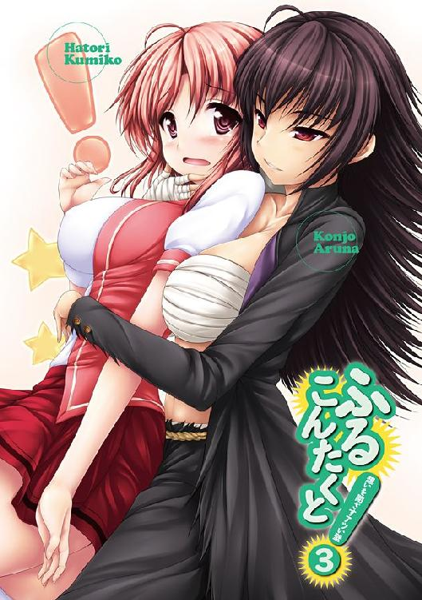
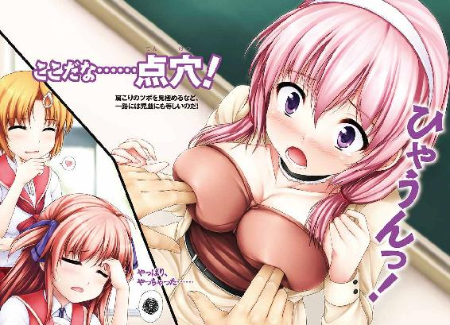
ふるこんたくと！
３ 想いを閉ざすアツい壁
あすか正太
角川スニーカー文庫
本作品の全部または一部を無断で複製、転載、配信、送信したり、ホームページ上に転載することを禁止します。また、本作品の内容を無断で改変、改ざん等を行うことも禁止します。
本作品購入時にご承諾いただいた規約により、有償・無償にかかわらず本作品を第三者に譲渡することはできません。
本作品を示すサムネイルなどのイメージ画像は、再ダウンロード時に予告なく変更される場合があります。
本作品は縦書きでレイアウトされています。
また、ご覧になるリーディングシステムにより、表示の差が認められることがあります。
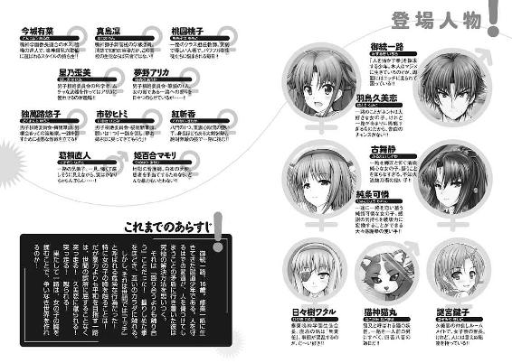
口絵・本文イラスト／uni8
序
ジイちゃんへ。
鳴神島に着いたら、すぐに手紙を書くと言って、けっこうな日にちがたってしまった。
ここは面白い島だ。
強いヤツがぞろぞろいて、いずれもみな、自分の哲学を持っている。
学ぶべきことばかりで、飽きることがない。
ジイちゃんの言うとおり、里の外に出てよかった。
そして、大事な報告が三つほどある。
まず一つ目。
活人流という一門を建てることにした。
虚心流を捨てたわけでも、忘れたわけでもない。
自分の拳を極めるための決断だ。
ジイちゃんから教えてもらったことはムダになっていない。
そして、二つ目。
弟子を取ることになった。
静という。同じ八門の門下だ。
未熟者の自分が弟子を取るなんて、まだまだ早いと思ったが、彼女もまた活人を目指す仲間であるがゆえに同胞とすることにした。
関係上、自分が師ということになっているが、彼女から教えてもらうことは多い。
なにしろ、よい乳をしている。
これは男にはないものだ。男がどんなに頑張っても女に頭が上がらぬゆえんでもある。
乳を触れ、乳を揉み、乳を知り、乳を極めることで、活人流を発展させていきたい。
そして、三つ目。
男としての責任を取ることにした。
結婚だ。
外の世界では、口づけというものをしたら、嫁にしなければならぬものらしい。
久美恋どのと、可憐どのである。
二人とも愛らしく、心身ともに健康な女子だ。
久美恋どのの話によると、結婚できるのは一人とだけらしい。
ホーリツというものでそうなっているのだそうだ。
だが、オレは男なので、責任から逃げるわけにはいかない！
断固として、活人する!!
一 サラリと変わる、教師と生徒！
鳴神学園獅子舞高校【なるかみがくえん・ししまいこうこう】
学園都市である鳴神学園には、子供から大人まですべての年齢層に対応した学校が存在している。高校の数は16。その１つが獅子舞高校である。
高校といっても、ここは鳴神学園。
学力に応じて、大学の講義を受けに行くのも自由。
他の学校の部活に参加するのも自由なので、名簿に名前が載っているだけの幽霊生徒もたくさんいる。
ちなみにこの学園の教師のうち約半数は鳴神学園の卒業生であり、学生だった頃は、相当に好き勝手をした者たちである。学園の記録のほとんどはネット上にアーカイブされているので、うかつなことを言うと『そんなこと言ったって、先生だって学生の頃は......』と、発言がブーメランとなって返ってくることが多い。
学園の自由すぎる空気も、そのあたりから来ている。
「なんという記念すべき日！」
感動！ 校門を見上げ、御統一路は感動していた。
鳴神学園獅子舞高校。今日から一路が通えることになった学園である。
「学校！ このオレが学校に通う時が来ようとは！」
学生服に身を包んだ一路は、興奮を隠しきれず、全身を震わせていた。
「ていうか、その年まで学校に行ったことがナイってことのほうがスゴイけど......」
一路の隣でつぶやくのは、幼なじみの羽鳥久美恋だ。
はたして、16歳になるまで学校に通ったことのない少年に高校の授業を受けさせてもよいのか？
そんな大問題について、先日、生徒会長室で話し合いがもたれた──。
この学園の最高責任者である生徒会長、日々樹ワタルはあっさりと答えた。
「学力？ いらんいらん」
大問題は解決した。
「それが生徒会長の言葉ですかっ!?」
思わず久美恋は、机をバンバンと叩いてしまった。
「ていうか、一路の転校を申し出てきたのは、久美恋、キミじゃないか」
「そうですけど、会長がいきなりメチャクチャなことを言うから......」
「直感を信じ、心のままに生きる。それが天才、いや天然の生き様だ」
「一路くんが心のままに生きたら、この学園がとんでもないことになっちゃいます！」
特に女の子が。
ハハッ、と会長は笑って。
「面白いではないか」
「面白くないですっ！」
「慌てふためく久美恋を見ているのが面白い」
「もーっ！ いい加減にして下さ～い！」
──とまあ、そんな会話があって、一路の転校が決まったわけである。
「いーい？ 学校はみんなと仲良くする場所なんだから、勝手なことをしちゃダメよっ」
久美恋は人差し指をぴんっと立てて、お姉さんみたいな口調で言った。
「うむ、そのつもりだ」
一路は自信まんまんだ。
「ホントに分かってるのかなぁ～」
相手は一路である。だから余計に久美恋は心配になった。
「いつもみたいに振る舞ってると、空気読めないヤツとか言われて、仲間外れにされるかもしれないんだからぁ......」
「それはそれでいーんじゃない？」
隣にいた謎宮鍵子がニヤニヤとした。
「どーいう意味よぉ」
「一路クンを独占できるじゃない。久美恋は」
「もー、茶化さないでっ。わたしは真剣なんだからぁ」
「だってぇ」
鍵子的には、真剣だからからかいたくなるのである。
「わたしは一路くんが、学校に夢いっぱいだから心配してるのぉ」
「愛だねぇ......」
「だって、一路くんったら、絶対、人に合わせたり出来ない人なんだもん......、人間関係で確実に行き詰まるタイプよ......」
「男友達なんて出来ないほうが、２人きりになれていーじゃないの」
「鍵子は無責任すぎー」
「だって、一路クンがフツーの男子になるなんてつまんないんだも～ん」
「残念ながら、オレは普通の男子になるぞ、鍵子どの」
またまたぁ、と鍵子は手をひらひらと振った。
「一路クンったら、相変わらず冗談キツイんだから。そんなコト言って、女の子の胸をぽにょぽにょんって点穴しちゃうんでしょ？」
「しない」
「えーっ！」
鍵子は驚いた。一路に失礼なぐらいに驚いた。
「学校とは、拳法とは別の修行をする場と心得ている」
「ほーっ」
鍵子はあっけにとられた顔をして、久美恋に耳打ちした。
「......一路クンが馬鹿なことをしなくなるなんて、なんかつまんないね」
「それでいーんですっ」
久美恋は上機嫌だ。
で、朝のホームルームである。
「御統一路、よろしくお願いします！」
黒板の前で、一路は元気よく挨拶をした。
ちゃんと、久美恋に教えられた通りに振る舞っている。
久美恋はニコニコだ。
「よしよし」
ちなみに久美恋の人生の三大テーマは『普通、地味、平凡』である。
派手なことが苦手な久美恋にとって、空気のように目立たずに生きることは、何よりの望みであり、幸せであった。
ナンバーワンにもオンリーワンにもならず、平凡の王道を歩み、平凡中の平凡を極めたいと思っている。そんな久美恋だから、一路が普通の男の子になってくれるのがとっても嬉しいのだ。
「うふふ」
久美恋が笑みを浮かべていると、後ろの席から鍵子がツンツンと背中をつついてきて。
「なぁーにドリームしちゃってんのよ、久美恋」
「し、してないわよ」
「どーせ、一路クンといちゃいちゃな学園生活でも想像してたんでしょ？」
「そ、そこまでは......」
久美恋は頰を染めて。
「わ、わたしはただ、これまでよりもちょーっとだけ仲良くできたらなぁ、って」
と、恥ずかしそうに右手と左手の人差し指をちょんちょんと合わせたり、ごにょごにょさせたりする。
久美恋は久美恋で、一路との学園生活に夢膨らませていたのだ。
「うまくいくといいけれど......」
そんなことを思いながら、鍵子は教卓のほうに視線を戻した。
──その、一路のほうであるが。
自己紹介の流れで、趣味を聞かれてしまっていた。
「趣味というほどのものはないが、武道をたしなんでいる」
へーっ、と生徒たちから物珍しそうな反応が起こった。
「瓦とか、割れちゃうの？」
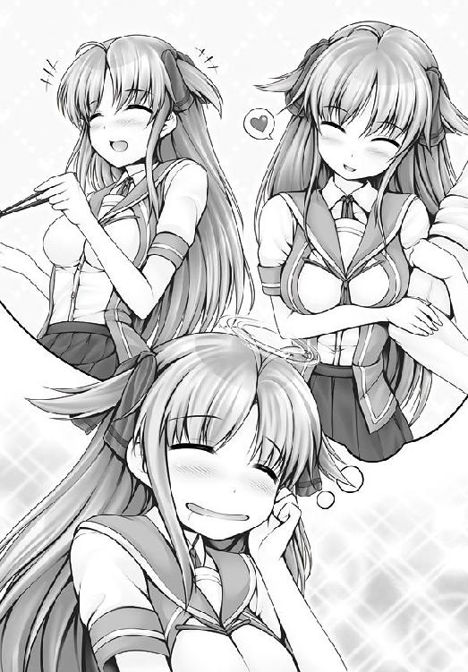
女子生徒が聞いてきた。
「車ぐらいまでなら、割れる」
「く、クルマっ!?」
びくっと、そばにいた先生が驚いた。
桃園桃子、一路のクラスの担任教師である。
「怖れることはない。活人流は拳法でありながら、医学でもある」
「いがく、ですか？」
きょとんと、桃子先生は目を丸くした。
「論より証拠を見せよう。先生、身体の調子がすぐれぬところはないか？」
「ええと、最近、肩が凝るようになっちゃって......」
「ふむ、それならば」
うなずいて、一路は先生の全身を見回した。
小柄で小顔の美人である。背は高いとはいえないが、スタイルはよい。
とてもふくらんだバスト。
丸々と満ちた、ふたつの乳房。
「ここだな......、点穴！」
一路は、桃子先生の胸のふくらみに、思い切り指をめり込ませた。
「ひゃあっ！」
桃子先生は絶句した。
あまりのことに、一瞬で頭のヒューズが飛んでしまったのだろう。
びっくりした顔のまま、桃子先生は倒れ込んでしまったのだ。
「なぜ気絶する!?」
「一路くんがエッチなことしたからでしょ！」
久美恋は立ち上がった。
「失敬な、これはエッチではない。点穴だ」
一路は主張する。
「もーっ、点穴しないんじゃなかったの!?」
「あ......、つい、普段のクセで」
クセで女の人のバストを触る男、一路。
「もう、犯罪はやめなさいって言ったじゃないの」
「点穴は犯罪ではないっ！」
「そーよ」と鍵子は首をつっこんだ「ハンザイじゃなくてヘンタイ」
「そうそう、ヘンタイ......って、違うぞ、鍵子どの！」
「違わないわよ、一路くん」
と言って、ツカツカと久美恋は一路の目の前に近づいてきた。
笑顔である。実に笑顔である。
笑顔でキック。
「うごあっ......！」
一路の顔面に。
桃子先生が目覚めたのは、小一時間もしたあと、保健室であった。
「先生、大丈夫ですか？」
心配そうな顔をして、久美恋が尋ねた。
桃子先生は額に手をあてて。
「私......、何か、とてつもなく驚く思いをしたような......」
「あまり思い出さないほうがいいよ、先生」
と、久美恋が言うと、隣で一路が。
「胸は頭についで大事な場所、そこを触られたぐらいでいちいち気絶していては、生き馬の目を抜く戦国時代を生き抜けぬぞ」
「今は戦国時代じゃないよっ！ 桃子先生、怒っちゃうよ!!」
久美恋は一路を叱った。
なのに、桃子先生ときたら。
「ごめんなさい......、大人にもなって......、情けないです......」
しゅん、と肩を落として、桃子先生は頭を下げたのだった。
「先生が謝っちゃダメですってば！」
「大事なのは謝ることではない。自分を改めることだ」
「一路くんこそ、改めなさいっ!!」
がすっ。
久美恋の手刀が一路の頭頂に決まった。
「あうっ......、痛いじゃないか」
「人の話を聞かないからですっ、反省しなさいっ！」
「本当にすみません、みなさん......」
桃子先生が謝った。
「いや、先生が反省する番じゃなくて！」
「いえ、私は教師として弱すぎるんです」
桃子先生は目に涙すら浮かべていた。
「ほらー、一路くんのせいだよー」
「ううっ、すまない、先生」
女の人の涙には弱い、一路だった。
「一路くんのせいではないんです、私が......」
と、桃子先生は何かを言いかけた。が、すぐに先生は口をつぐんでしまう。
何かを、隠しているようだ。
「......先生、何があったの？」
察しの良い鍵子が聞いてきた。
「............」
先生は静かにうつむき、口を閉ざした。
「先生、そんな顔をされると、余計に心配になっちゃうよ」
「............」
何をかばおうとしているのか。先生の口は重い。
「桃子先生っ」
「実は......」
かなり迷ってから、先生は重い口をゆっくりと開いた。
それは臨時に担任を受け持っている別のクラス、２年３組の問題だった。
このクラス、実に反抗的な生徒たちばかりで、授業というものがまったく成立しないのだ。
「出欠すら、取れないんです」
「学級崩壊ですね......」
久美恋がうなずくと、桃子先生はますますうつむいて。
「悪いのはすべて私です。私の指導力が足りないんです」
「そうじゃなくて！ 悪いのは生徒のほうですよ。先生、なんでもかんでも自分のせいにしすぎです」
「許せぬ！」
声をあげたのは一路だった。
拳をぎゅっと握りしめると、怒りにぶるぶると身を震わせて。
「教師という偉大な職責を担う存在に迷惑をかけるとは、生徒の風上にもおけぬ！」
（誰のせいで、先生が気絶したんだっけ......？）
呆れて、久美恋は何も言えなくなる。
「俺が桃子先生の代わりをつとめよう。そのクラスの代理教師になる」
「「「え～っ！」」」
これにはみんなが驚いた。
「桃子先生を困らせるような不届き者は、根性を叩き直してやらねばなるまい」
先生を保健室送りにした男が、言う。
「生徒が先生なんて、一路くん、何をムチャ言ってるのよっ！」
「むちゃ？」
きょとんと、一路は首を傾げた。
「そうだよ、生徒が授業なんて出来るわけないでしょ～～～！」
ははっ、と一路は破顔し。
「やってみなくては分かるまい」
「分かるよ！ 今日はじめて学校に来たばかりの一路くんが先生の代わりをするなんて、無理に決まってるよ！」
「やってみる前から、ムチャだのダメだの、可能性を潰しにかかるのは良くないと思うぞ、久美恋どの」
「可能性じゃなくて、危険性を潰したいのっ!!」
はっはっはっ、と一路は笑い。
「久美恋どのは心配性だなあ」
「わたしのほうがズレてるのっ!?」
「む」
ふと、気配を感じて、一路は廊下のほうを見た。
誰もいない。
それでも一路は廊下のほうを凝視しつづけた......。
「どうしたの？ 一路くん」
「すさまじい殺気を感じたのだが......」
「殺気ぃ？」
はぁ、と久美恋は額に手をあてて。
「あの、ここ、戦場じゃなくて学校なんだけど......」
「アタシも、変な気配を感じたわ」と、鍵子。
「もう、鍵子まで何を言ってるのよぉ！」
「あは、珍しく一路クンと意見が一致したから」
と、鍵子は無邪気に笑う。
「とりあえず、桃子先生はここで眠っていてもらおう」
「えっ」
とすっ。
久美恋が止める間もなく、一路は桃子先生の首に点穴をした。
「ひゃんっ」
桃子先生はぐらりと崩れ落ちて、一瞬で眠りについた。
「一路くんっ！ 先生になんてことを!!」
久美恋は叱る。が。一路にはまったく罪の意識はなく。
「で、その問題クラスはどこなのだ？」
「だーかーらー、生徒が先生になれるわけないでしょ────！」
『転校初日から教師か。ハハッ、面白い。やってみろ』
即答だった。
電話で、生徒会長の許可が出てしまった。
「ありえなさすぎる......」
廊下を歩きながら、久美恋は頭痛を覚えた。
「さすがは生徒会長どの！ 理解がある！」
隣では一路が、やる気に燃えていた。
「ホントに出来るのぉ？ 授業」
久美恋は疑ってかかる。無理もない。
「授業とは教師と生徒の闘い。そう考えれば、オレでも何とかなるだろう」
「なるわけないでしょ！」
「やってみなければ分かるまい」
一路はいつも前向きだ。
前向きすぎだった。
久美恋は先行きが不安になり、頭痛に額を押さえるしかない。
「一路くんは一度、こっぴどく痛い目に遭うといいよ......」
「闘いは始めが肝心だ。油断は禁物」
と、そんな会話をしているうちに、２年３組の前まで来た。
「ここか」
一路は扉を開けた。
と、天井に仕掛けてあったバケツから、ばしゃあと水の洗礼が一路に降りかかった。
思い切り水をかぶって、全身がズブ濡れになった。
「な、なんて、基本に忠実な教師いびり......」
久美恋は驚くよりも呆然となるばかりだった。
そして一路は濡れネズミである。
それを見て、久美恋はちょっとだけイジワルな気持ちになり。
「油断は禁物じゃなかったの......？」
「う、うむ」
一路は、バツの悪そうな顔をした。
「ま、がんばってね」
この程度のいびりなら平気だろう。そう思い、久美恋は自分の教室へ戻っていった。
──さて、授業である。
バケツの水を浴びたぐらいで、めげる一路ではない。
さっそく一路は教卓につくと、出欠を取ることにした。
出席簿を開き、最初の生徒を呼ぶ。
「浅川、浅川アキラ、いるか？」
返事はなかった。
みんな、てんでばらばらに遊んでいる。
先生に背を向けるのなんて当たり前。おしゃべり、ケータイ。教室の後ろのほうでは椅子で輪を作って、携帯ゲーム機で対戦をしてる者までいる始末だ。
「なるほど、これが学級崩壊というやつか......」
「ウチは毎日こんなものですよ」
先頭の席に座る女生徒がクールに言った。
三つ編みの少女だ。涼やかな顔立ちをしている。清楚な雰囲気を漂わせていた。
「キミは......？」
「学級委員です」
さっそく、一路は彼女の名を名簿で確かめる。
「真島凜、か」
「あなたこそ、ウチのクラスに何の用？」
「桃子先生のために、２年３組の担任を引き受けることにした」
「桃子先生の？」
一瞬だけ、凜は眼差しを曇らせ。
「何をしても無駄ですよ。先生の言うことを聞こうとする生徒なんて、このクラスには１人もいませんから」
「それを糺すためにきた」
一路は名簿を閉じて、歩き出した。
「静かにしろ」
生徒たちは誰ひとり、一路の言葉に耳を傾けなかった。
居眠りをする男子、ぺちゃくちゃとおしゃべりをする女子。
中にはイヤホンで音楽を聴きながら、ケラケラと漫画を読んでいるという、学校まで何をしに来ているのか、さっぱりと分からないモノまでいる。
一路は、その彼に目を向けた。
ちなみに彼は、一路の倍は肉厚のある超マッチョ。
一路は毅然と告げた。
「休憩時間は終わったのだから、イヤホンは外せ」
「るっせーんだよ。ばーか」
男子は一路を鋭い目つきで睨み付けた。
「聞こえてるのか、よかった」
と、一路は超マッチョな生徒の手首をつかんだ。
「て、てめっ！」
男子は力で一路を振り払おうとするが、一路の力は凄まじく、逆らえない。
「ぐ、ぐうううう......っ！」
一路は男子の手を動かして、イヤホンを外させた。
「そうだ、それでいい」
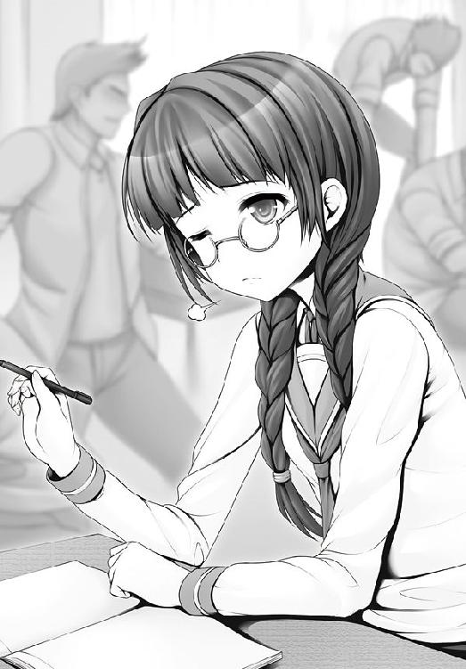
「ぐっ......！」
男子は怒りをたぎらせて一路を睨み付けた。しかし、すぐに苦虫をかみつぶしたような顔をして、素直に漫画本を閉じたのだった。
しん............。
クラス一の巨漢が静かになったことで、教室は静かになった。
そんな感じで授業は終わり、休憩時間となった。
ちなみに一路の授業はというと、難しい漢字を読めないということが判明し、あっさりと自習となった。
何のためにクラスを静かにしたのか、さっぱりと分からないこととなったが、一路に怖れをなした不良たちからは、何一つ文句は出なかった。
「驚いたわ」
一路に話しかけてきたのは、学級委員の凜だった。
「教科書も満足に読めないのに、先生をやろうだなんて」
「授業は、気合いだ」
ぜんぜん説明になってない。
「桃子先生とは、どんな関係？」
一路は、ここに来るまでの過程を伝えた。
乳揉みをしたことも。
「まっ」
凜は顔を真っ赤にした。
翌日の朝である。
「みんな、おはよう」
２年３組の教室の扉を、一路は元気よく開けた。
いきなりバケツが落ちてきて、一路はズブ濡れ。そのあとに電気ショックが一万ボルト。
ブバババババババババババババ！
「..................」
一路の髪の毛は、焼け焦げた匂いも甘い、こんがりアフロ。
よくも死なないものである。
教師いびりは、昨日より過激になっていた。
「お前たちの元気はよおく分かった」
それだけを言うと、一路は冷静に教壇に立った。
......そんな態度が、一部の生徒には面白くなかったらしい。
「おっと手が滑った」
生徒たちのほうから、一路めがけて何かが飛んできた。
さっと一路がよける。
黒板が砕け散った。
野球ボールほどの大きさをした鉄球である。
「遅刻、遅刻ーっ！」
バイクが教室に飛び込んできた。
ライダーはスピードを緩めることなく、そのまま一路をひき殺そうとする。
「崩壊点ッ！」
一路はバイクの一点を指突した。
粉々に砕け散るバイク。飛び散る破片。
「大丈夫!?」
凜は一路のもとへ駆け寄った。
当然、一路に怪我などない。
「問題ない」
するとだ。凜はホッとするどころか、不本意そうな顔をした。
休憩時間がきた。
トイレに行こうとした一路は、廊下で２年３組の生徒を見かけた。
「よ......」
声をかけようとして、一路は立ち止まる。
ひ弱な生徒を、５人ぐらいの屈強な男子が取り囲んでいたからだ。
どこへ連れていくつもりなのだろうか。
「ん............？」
不審なものを感じた一路は、あとをつけてみることにした。
......案の定。
校舎の裏側まで来たところで、イジメが始まっていた。
不良たちは少年を取り囲んで転がすと、彼をサッカーボールのように蹴ろうとしたのだ。
「やめろ」
一路は止めに入った。
「何だよ、てめえ」
不良たちが、一路を睨み付けた。
「なぜそんなことをする？」
「無抵抗なヤツをいたぶるのは楽しいからだよ」
「なるほど」
一路は実践した。不良相手に。
ビンタ、ビンタ。
ビンタ、ビンタ、ビンタ、ビンタ。
ビンタ、ビンタ。
ビンタ、ビンタ、ビンタ、ビンタ。おう。
「へぶるぅああああっ！」
不良たちは倒れ伏した。
一路がしたのは、ただの平手打ちである。
ただ、叩く手が目で追えないぐらいに高速で強力だっただけである。
「た、助けて......！」
不良たちから、悲しい声がもれた。
「なんだ、全然楽しくないぞ」
「ゆ、許して下さい......」
不良たちは懇願した。
一路とて、好きでしたことではない。
「これからは、くだらないことはやめるのだな」
その言葉に、ケッ、と不良の１人が毒づいた。
負け犬とも思えないような捨て台詞を吐く。
「このクラスをまともにしようとしても無駄だぜ！ 影の番長がいるんだからな！」
「影の、番長だと？」
待ってましたとばかりに一路は瞳を輝かせた。
そいつが黒幕か、と。
影の番長との遭遇は、一路が予想していたよりも早く訪れた。
（誰なのだ......、それは......）
トイレで、そんなことを一路が考えていた時だった。
突然、目の前が真っ暗になった。
「なっ......！」
声がする。
だが、一路はすでに袋詰めにされていた。
「馬鹿がっ！」「飛んじまいな！」
殴る蹴る。殴る蹴る。
一路は、集団暴行を受けた。
ひとしきりの乱暴を受けると、一路は担ぎ上げられた。
袋詰めにされているから分からないが、どこか別の場所に運ばれている。
数分のあとだろうか。
どさっ、と荷を捨てるように一路はうち捨てられた。
「あなた、ウチのクラスから出て行きなさい」
少女の声だった。
「お前は......！」
一路は声の主を見抜き、戦慄した。
袋から放り出されたばかりの一路は、コンクリートの上に転がっている。
空が見える。屋上だった。
不良たちの間から、ひとりの少女が姿を現していた。
「なっ......！」
番長の正体に、一路は息を呑んだ。
「真島......、凜......！」
優等生である彼女がなぜ？ 一路は混乱した。
「どうして、おぬしがそんなことを......」
「あなたはしてはいけないことをしたわ」
「してはいけないこと、だと？」
「あなたは桃子先生を......、桃子先生を......！」
そう言うと、凜は髪の毛をしばっていたゴムをほどいた。
ぱああっ、と風をはらんだマントのように、彼女の黒髪がたなびく。
「三つ編みメガネは世を欺くための仮の姿......！」
──と、凜が言葉を続けようとした時だった。
「凜さん、あなたがどうして......！」
桃子先生だった。
「先生っ!?」
凜は動揺した。
なぜ桃子先生がここに!?
「一路、貴様っ！ よくも、よくも先生を呼んだわね！」
凜は怒りを深めた。
「先生を呼んだのはアタシよ」
桃子先生のあとから、鍵子が現れた。
「一路クンだけじゃ、この問題は解決できないと思ってね」
保健室でのアヤシイ気配に、彼女は気付いていた。
久美恋は呆れたが、ただの錯覚だと鍵子は思わなかったのだ。
「先生にだけは、知られたくなかったのに......！」
怒りの目を、鍵子に向けた。
だが、鍵子は動じない。静かなまなざしを凜に向けて。
「先生のこと、好きだったの？」
「ち、違うわ！」
凜は顔を真っ赤にした。
「好きだったのね............」
「違うって言ってるでしょ！」
ムキになって抗弁する凜を、鍵子はいなすように。
「女の子が女の子を好きになるなんて、よくあることよ」
「私の想いは特別だわ！」
「それもよくある思い込み」
「違うって言ってるでしょう！」
凜は、自ら過去を語り始めた。
「私が先生を好きになったのは、１年生のとき......」
仲の良かった友達が学園を去ることになった──。
幼稚園の頃から、ずっと一緒だった友達だった。
寂しかった。
彼女が教室を去っても、立ち去る気になれなかった。
とっくに下校のベルは鳴っていた。でも、教室を出る気になれなかった。
自分まで教室を出たら、彼女との日々がすべて過去の思い出になってしまう気がしたからだ。
そんなとき、桃子先生が教室にやってきた。
挨拶程度のやりとりで、桃子先生は何かを察した。
『女の子は、泣きたい時、我慢しなくていいのよ』
『な、泣いてなんかいませんっ』
強がる凜を、先生は抱きしめた。
凜にとっては、まるで昨日のことのように、はっきりと思い出せる出来事だった──。
「私を抱きしめてくれた桃子先生の温かさ。その包容力に私は......」
「なんだ、おっぱい惚れか。オレと同じだな」
「アンタと一緒にしないで!!」
凜は激昂した。一緒にされたら、そりゃ腹も立つだろう。
「そして、次の春が来たわ」
自分の正当性を主張したいのだろう。凜は再び過去語りを始めた。
「私は２年のクラス編成で、桃子先生のクラスに入れなかったことに絶望したの......。そして、クラスをシメたわ」
「そんなに簡単にシメられるものなの？」
鍵子が聞いた。
と、そばにあったドアに凜は視線を向けた。
出入り口の扉である。
凜はそのドアノブをつかむと、腕の力だけで、ぐしゃりとノブをひねり千切ったのだ。
「もともと私は、勉学ではなく、この力でこの学園に入学してきたの」
「なんと！」
凜の超握力に、一路は驚嘆した。
「私は考えたのよ。次から次に担任をクビにしていけば、桃子先生が来てくれるんじゃないかって」
「そ、そんな理由で......！」
鍵子は呆れた。
「私は本気よ！」
「本気なら、何をしてもいいってわけじゃないと思うんだけど......」
「いいのよ」
はっきりと、凜は言いきった。
「年内には校長の弱味を握って、来年度のクラス編成を思いのままにしてやるわ！」
「な、なんてスケールの小さい野望！」
それほどのパワーを持ちながら、その程度の悪事しか考えられない彼女に、逆の意味で鍵子は戦慄した。
しかし、世界的には極小の野心であっても、凜の人生においては極大の野心であった。
凜に対して、一路は尋ねた。
「好きというのはようわからんが、つまるところ、貴様はどうなりたかったのだ？」
「バッ、馬鹿っ！ 言えるわけないでしょ!!」
桃子先生の前で。
凜は憤怒に顔を紅潮させた。
だが、一路は毅然とした顔つきを崩すことなく。
「そんな遠回りをするより、まっすぐに想いを告げればよかったのだ」
「無理に決まってるでしょ！」
凜は怒りをほとばしらせて。
「そんな大それたこと出来るわけないでしょ！ 他人事だと思って、好き勝手言わないで！」
「不良軍団を作ることのほうがよっぽど大それてる気がするけれど......」
と、鍵子はつぶやく。
「先生の胸を揉めばよかったのだ」と、一路。
「あんた、言うにことかいて、何をメチャクチャ言ってるのよ!!」
凜は怒った。
「うんうん」
これには同意の鍵子である。
「そんなことしたら、余計に嫌われるでしょう！」
「人生など無理の連続。いや、無理を通してこその人生だ」
「はあっ!?」
凜は声をあげると、ますます怒りを深めて。
「人を馬鹿にするのもいい加減にして！」
「オレは活人拳で、闘わずに和を成すぞ！ この点穴の技で!!」
「ば、ば、バカじゃないの！」
凜は肩を怒らせた。
「エッチなことして平和を作るなんて！ そんなこと、世界がひっくり返ったって無理に決まってるでしょ!!」
「やってみなくてはわかるまい」
「わかるわよっ!!」
凜は校舎が震え上がるほどの大声をあげた。
と、その声をかき消すように爆音が響き渡った。飛行機だ。
２人の頭上を飛行機が飛んでいったのだ。
「鉄の塊を空に飛ばせるのだ。ならば、人に不可能なことはあるまい」
「............っ!!」
一路の言葉に、凜はたじろいだ。
一瞬だけ、ほんの一瞬だけ、一路の言葉を真に受けそうになってしまったのだ。
凜は、すぐに愚かな自分に気付いた。
「こっ、言葉だけなら、なんとでも言えるわ！」
（............一路クンって、たまにまともなことを言うのよね）
鍵子は騙されない。
「戯れ言なんて聞いていられないわ！」
凜が襲いかかった。
「ぬっ」
一路は、凜の背後に回り込もうと動いた。
逃げると見せかけて、すっと踏み込み、一路は点穴を図る。
「させないわ！」
すばやく振り向いて、凜は一路の腕を弾いた。
返す技で、凜は手刀を一路に向ける。
皮膚一枚の差で、一路は凜の攻撃をかわした。
バキバキッ......！
凜の手刀は壁を叩き、壁面のコンクリートを粉砕した。
「うわあああっ！」
その余波で、配下の不良どもが吹き飛ぶ。
「なんと......！」
凜の力に、一路は感嘆した。
「よそ見をしている場合？」
凜が不敵に笑う。一路は手首をつかまれた。
メキメキッ......！
骨の軋む音がする。
彼女の凄まじい握力に、一路は戦慄した。
「ぐぬぬ......！」
「女だからって、見くびらないでよね」
「いや、むしろ興奮する」
「興奮っ!?」
凜はうろたえた。
「おぬしの強さはホンモノだ。感動を覚えるほどにな」
「ばっ、馬鹿！ 紛らわしい言葉遣いしないでよっ！」
「性分でな」
一路はすっと体重をかけて、凜の関節が逆になるように動いた。
「くっ......！」
凜の腕の力が反射的に緩んだ。その隙をついて、一路は彼女から距離を取る。
「逃げてどうするの」
ふふっ、と凜は笑った。
その通りだ。
この闘い、凜の豪腕が優位にあることに変わりはない。
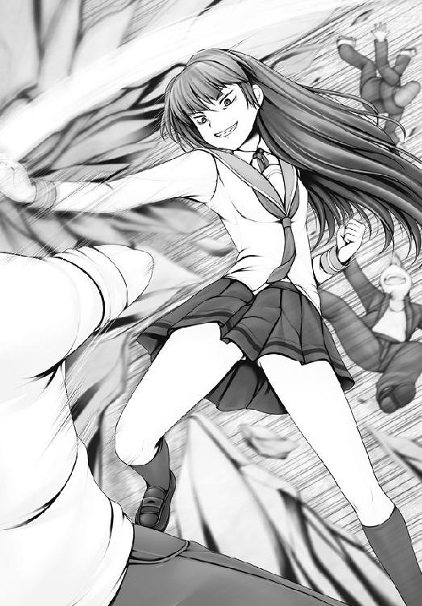
一路が点穴を決めるためには、凜の間合いに入らなければならないからだ。
『点』でしか攻められない一路に比べ、力任せに『面』を攻撃できる凜のほうが圧倒的な優位にあった。
せめて一路が剣術や棒術の使い手であれば、対抗する手段もあったであろうが......。
「闘いを選んだ段階で、あなたの負けは決まっていたのよ！」
一路の闘い方を見て、道具を使ってくることはないと凜は見切り、勝利の確信に笑みをこぼした。
「覚悟しなさい！」
叫んで、凜は一気に打って出た。
ジャンプして、一路との距離を詰める。
「くっ......！」
すんでのところで一路は攻撃をかわす。凜の手刀は空振った。
叩きつける相手を失った凜の破壊力は、床のコンクリートにぶつけられた。
全体重をかけた渾身の一撃だったのだろう。衝撃で、床面に蜘蛛の巣のような亀裂が走った。
ついで、崩れ落ちる。
彼女の着地した足場もろとも、コンクリートが地割れを起こしたのだ。
「きゃあああああっ！」
「ぬっ」
一路は手を伸ばした。凜の手をつかみ、引き寄せる。
直後、足場は完全に崩落した............。
「............っ！」
凜は毒気を抜かれたように放心した。
（一路に手をつかまれていなかったら......）
が、反省も一瞬だった。
それぐらいのことで、屈折した凜の心がまっすぐになるはずもなかった。
「何で助けたの!?」
逆ギレした。
「偽善者ぶらず、さっさとトドメを刺せばいいでしょう!!」
それに対して、一路はきっぱりと言った。
「活人流は、相手を倒すための拳ではない」
凜はそれでも一路を睨み付ける。
「そっちが許したって、私は許さないわよ！ よくも、先生を汚して......！」
「それは逆恨みというものだ」
「はあっ!?」
言うにことかいて、この男は何を言い出すのか。凜は怒りを深めた。
「おぬしも触りたければ触ればいいのだ」
そんなことを言った、次の瞬間である。
「ひゃうんっ!!」
一路は凜の胸を触っていた。
「触りたければ触ればいい！」
「はあああ!?」
わけがわからない。怒るよりも早く、凜は頭が真っ白になっていた。
一路はさらに、柔らかな凜のふくらみを揉みしだいた。
「あんっ」
感じる。声が漏れた。凜は恥ずかしくて口を閉ざした。
「声をあげるんだ」
一路は真面目な顔で言った。言ってのけた。
「な、ななななな、何を言ってるの、あなた!?」
「自分に噓をついてはいけない」
「う、噓なんて......」
凜はおろおろと狼狽した。
根は純真な彼女である。女同士だからと告白をためらうような乙女である。
史上空前の恥ずかしさや未知の感覚に、頭がいっぱいいっぱいになった。
「気持ちと行動が一致しておらぬから、心に毒がたまり、イジメというカタチで噴出するのだ」
「アンタなんかに、私の気持ちが分かってたまるもんですか」
「おぬしの気持ちを分かっておらぬのは、おぬし自身だ」
「えっ」
一路はさらに、凜の胸を揉みしだいた。
「ちょっ......、やめ......、あんっ」
「感じるだろう？」
「ふえっ!?」
凜はパニックになった。
一路の押しの強さに、凜はどうしていいのか分からなくなった。
「その思いを素直に声に出すんだ」
「だ、だれが！......ああんっ！」
完全なる、犯罪の現場だった。
......ちなみに一路は点穴術という、ツボ押しの達人であり、いわばプロである。
プロが素人と勝負をするのだから、ズルいといえばズルいのだが、大好きな先生に告白も出来ずに悶々としていた純情少女には『触られて、感じちゃった、恥ずかしさ』という思いだけで、もう心臓はどきどきばくばく、ハートは限界突破で、何も考えられなくなってしまうのだった............。
「ひぁん、もう、意味わかんない」
「女が女を好きになって、何が悪い！」
一路は断言した。
「つまらない常識に縛られる必要はない」
「だ......だからって、こんなこと......」
「違うことと、間違っていることは違う」
「ど......どういう意味？」
「みんながそうだからと言って、自分が人と違うからと言って、それはおぬしが間違っていることとは違う」
「でも、私が告白したからって、先生には......」
届かない。
そんな想いを、凜は呑み込んだ。
「だったら先生を変えてしまえばいいではないか」
「私が？ 桃子先生を？」
「お前の愛というやつで、先生の気持ちを変えてしまえばいいのだ」
「えっ......」
凜は言葉を失った。
（そんなこと......、考えたこともなかった......）
あとはもう、いつものごとく、いつものパターンだった......。
ひとしきりの点穴が終わり、一路は満足した。
「問題解決！ うむ、めでたい！」
「じゃあ、ご褒美タイムね」
いつの間にか、久美恋が背後に立っていた。
笑顔の久美恋が。
......一路は、嫌な予感がした。
「そろそろ久美恋どのが来るのではないかと、うすうす予感はしていたが」
久美恋は鋭いまなざしを向けて。
「ケジメは大事よね」
「まて！ オレの話を聞いてくれ！」
「聞く耳、持ちません」
「へぷわあ！」
一路は、久美恋にボコボコにボコられた。
そんな光景を見て、凜は感動していた。
「なんという自己犠牲......。あのような目に遭うと分かっていて、私に......」
「ふえっ」
ちょうどそばにいた鍵子は、凜の言葉に驚いた。
凜は一路を見つめていた。
その眼差しに浮かぶ感情は、もはや怒りではない。
感動や尊敬といった......。
「一路の言う通りにすれば、私も変われるのだろうか......」
「そ、それはちょっと......」
何を言ってよいのか、言葉に困る鍵子だった。
翌朝のことである。鳴神獅子舞学園へと続く並木道である。
一路や久美恋たちが歩いていると、ちょうど桃子先生と肩を並べた。
「先生、おはよう」「先生、おはようございます」
「おはようございますっ」
さわやかな朝の挨拶である。
「桃子先生～っ!!」
凜が駆けてくる。
笑顔だ。たまらなく笑顔だ。
嬉しくて、桃子先生もそれに答える。
「凜さん、おはようございますっ」
「ぱいたーっち！」
と、凜の手が桃子先生のふくらみをむんずともみしだいた。
「ひゃあっ！」
桃子先生、真っ赤に。
いっぽう凜は充実感でいっぱいだ。
「自分に正直になるのって、気持ちいい～～っ！」
「いいのっ!?」
久美恋は仰天する。
「うむ、オレの指導のたまものだな」
満足げに、一路がうなずいた。
「いいわけないでしょ～～～～～～～～～～～～～～～～～～～～っ！」
さわやかな青空の下に、久美恋の叫びがこだました。
二 たゆんと揺れる、乙女とふくらみ！
鳴神学園番長連合【なるかみがくえん・ばんちょうれんごう】
鳴神学園は番長のメッカである。
まさか日本列島の端っこまで、わざわざ番長になるためにやってくる物好きなんて、いるわけないだろう......。
いるのである。
たくさんいるのである。
鳴神学園には入学試験の他に、〝天才とバカは紙一重〟と豪語する生徒会長の審査があり、ちょっとでも見どころ（ヘンなところ）があれば、生徒会長が合格のハンコを押してしまうものだから、鳴神学園はバカのメッカにもなっているのである。
で、まあ、『オレより強いヤツに逢いに行く』とばかりに全国から集まった番長たちが、頼まれもしないのに毎日のように喧嘩にあけくれるわけだ。
迷惑といえば迷惑な連中だが、突き抜けたおバカさん揃いなので、付き合うとけっこう愉快な奴が多い。
ドドドドド............。
朝の滝壺であった。
高みから、とめどなく落ちてくる水が、激しい飛沫と音を立てている。
ここは学生寮の裏に広がる森の中。
緑なす木々を分け入ったところにある滝壺である。
「あっ......」
少女の唇から、愛らしい吐息が漏れた。
彼女の名は、古舞静。
その名の通り、清楚で古風なたたずまいをした乙女である。
彼女は上半身を裸にしていた。
滑らかな肌を、丸みをおびた曲線を、あらわにしていたのだ。
きらりと差し込む日の光の下、静の柔肌は白く輝く。
目立つのは、まるまると満ちた乳房が、左右に２つ。
そのバストを、静は、こともあろうか、師とあおぐ少年の手に委ねていたのだ。
少年の名を、御統一路。
一路の人差し指が、ふくよかな静の乳房に触れ、沈んだ。
「ん......、あんっ」
こらえきれず、静はまた息を漏らした。
（指先でなぞられているだけなのに......!!）
静は、一路の指技に震えていた。
２人は、朝っぱらからエッチに励んでいるわけではない。
（いつ見ても、見事だ......）
一路は静の乳房に感心していた。
静のバストは、芸術品と言うしかない乳房だった。
大きいだけではない。みずみずしさと張りがあり、何よりも深い弾力があった。
今風に言えば、ゆるふわ。
ゆるふわな乳は、無造作に押し込まれた指を包みこむと、実に柔らかく押し返す。
あたかも母の温かみのように、一路の指を受け止め、包み込む。
その感触に、一路は満足していた。
「うむ、静は、今日も気が充実しているな」
一路はいかがわしいことをしているのではない。
彼女の心臓に一番近い場所、つまり乳深くに指を沈めることで、一路は彼女の気の流れを確かめているのだった。
「師匠のおかげです」
褒められて、静は嬉しさに頰を染めた。
そうなのである。
一路と静は、活人流点穴術の修行をしているのだった。
「点穴術には〝陰陽〟の概念がある」
一路が言うと、静が言葉を続ける。
「光と闇、白と黒、男と女、陽の気と陰の気」
「男であるオレの陽の気と、女である静の陰の気が触れることで、互いの気が充実する。ただ触れあえばいいわけではない。互いの気の力が釣り合っていなければならない」
「ありがとうございます」
静は、一路に認められることが何よりも嬉しかった。
「一路どのの指に触れられると、心が躍り出し、身体がポッと火照り出します」
「そうなのか？」
「くすぐったいような、気持ちいいような、なんとも形容しがたい感覚が身体中に広がって、心が満たされていくのです」
「オレもそうだ。静の大きな乳を触っていると、ドキドキするような、ぽかぽかするような、なんとも言えぬ気持ちになっていく」
「私もです」
「雑念を忘れ、仲良くむつみ合う。これこそ、活人の神髄だな」
「はいっ」
闘わずに、平和を成す。
まさに、平成。
これぞ一路が目指す、活人流の奥義であった。
そのための半裸である。
そのための乳揉みである。
決して、決して、エッチな意味などない。
本当である。
「では、修行のレベルを上げるぞ」
「はいっ！」
凜とした声で返事をしながら、静は緊張した。
（気を引き締めなければ......）
（指１本でも、あのように感じるのだ）
（ましてや手のひら全部ともなれば......）
きゅっ、と静は目を閉じた。
一路は、左右合わせて10本の指すべてを静の乳房に押し当てた。
触れては揉み。
手のひらを滑らせては、また揉みしだく。
どう見ても、愛撫であった。
「はっ......、ああっ」
こらえきれず、静の唇から甘いうめきが漏れた。
だが、これは修行である。
「んんん......、一路どの......、ああ、はんっ！」
くるおしいぐらいに、修行。
けしからんぐらいに、修行だった。
一路と静に、エッチなことをしているという自覚はまったくない。
だから２人は、胸を触ったり触られたりすると、なぜ気持ちがよくなっていくのか、実はさっぱり分かっていないのだった。
（静の乳は、魅力的すぎる............!!）
一路は静のバストから目が離せなくなり。
（一路どのの修行は、激しすぎる............!!）
彼の指先から伝わる、快美という名の波動に、静は身を震わせるのだった。
そんな滝壺へ、何も知らぬ少女が向かっていた。
「今日の朝ゴハンは会心作なんだから♪」
綺麗な髪の色をした乙女である。
羽鳥久美恋である。
（一路くんは、ゴハンが大好物）
ふかふかに炊いた、真っ白なゴハンは一路の何よりの好物だった。
一路が喜ぶ姿を思い浮かべる。それだけで久美恋は幸せになる。
にまにま、と頰が緩んでくる。
大好きな人と、１つ屋根の下で過ごせる幸せ。
久美恋は胸に手をあてて、夢想を広げていった。
『なんて素晴らしいゴハンなんだ！ 僕のお嫁さんになってくれないか』
『まぁ』
にまにま。にまにま。
はっ、と我に返り。
「って、わたし、朝から何を考えてるの～っ!?」
顔を真っ赤にさせながら、手をばたばたさせて、久美恋は妄想をかき消した。
......と、まあ、羽鳥久美恋は夢見る女の子な16歳なのである。
滝壺が見えてきた。
「一路くん、朝ご飯が出来たよ～」
その直後、久美恋の笑顔が凍り付いた。
見たのだ。
大好きな一路が、静と乳繰り合っている姿を。
「............、............、..............................！」
久美恋は絶句した。絶句するしかなかった。
「い、一路くん......？」
声が震える。瞳がわななく。ふるふると、うるうると。
「ん......？」
彼女の声に、一路は振り返った。
一路は見た。
怒りの化身と化した少女の姿を。
一路は、ちょ～～～～、叱られた。
（って、怒られるだけで済んじまうってのも凄いよな......）
ここは学校へ向かう、途上の道である。
猫丸は前を歩く一路たちを見上げていた。
猫丸は猫ではない。
猫又、つまり猫の妖怪である。
一路のお目付役として、一緒に山奥から下りてきた兄貴分である。
──それはともかく、一路は、顔を真っ赤に腫らしていた。
果たして、誰にやられたのだか。
「誤解だ......」
「なにが誤解なのよ!?」
久美恋は肩を怒らせるばかりだ。
「あれは修行だ。誰がどう見ても修行なのだ」
久美恋の疑いを解きたくて、一路は必死に訴えた。
「あれのどこが修行なのよっ！」
久美恋はますますムクれるから、一路はさらに必死になる。
「乳を触っていたわけではなく、心臓に近づくために乳を触っていたのだ」
「やっぱり、触ってたんじゃないの!!」
「活人流に問題はない！ 乳のある場所に問題があるのだ！」
「そんなふうに考える、一路くんの頭が問題なのッ！」
すると、だ。
「朝から......」「２人で何をしていたのかしら......」
路上での２人の会話に、そばにいた学生たちからヒソヒソと噂しあう声が聞こえてきた。
（ちょ、ちょっと、みんな、違うったら！）
久美恋は恥ずかしさに、顔を紅葉のようにした。
（もーっ、やだーっ！）
そんな久美恋と一路を見て、２人の数メートルあとを歩いていた静は、フフッと猫丸にほほえみかけた。
「今朝も師匠と久美恋どのは仲睦まじいな」
「違うだろっ!?」
思わず声を上げてしまう、猫丸であった。
と、そこへである。
「お前が、御統一路かい？」
女の声がした。
現れたのは『番長』である。
そう表現するしかない。
カタチから入ってみました、と言わんばかりの女番長であった。
羽織のように裾の長い学ラン。胸には純白のサラシ。
「うっ......！」
久美恋は番長を見て、激しく動揺した。
番長のある部分が、壮絶に凄かったからだ。
何が凄かったのか？
正直者の一路が感嘆した。
「おお、なんと、すごい乳!!」
サラシでは隠しきれないボリュームのバストが凄かったのだ。
息をするだけで、揺れる胸。
あえて漢字二文字で表すならば、爆乳。
フフン、と番長は笑って、自分の胸を指さし。
「ここに目を付けるとは、御統一路、噂に違わぬ男だね」
「ほう、オレの名は知れているのか」
「女の敵として、ね」
「それは誤解だ」
「言葉はいらないだろ？ 拳があるならサ」
バッ、と彼女は学ランを脱ぎ捨てた。
「アタシは鳴神学園番長連合総長、今城有菜!!」
「ああああ......」
久美恋は頭を抱えた。
「また変なのが出てきた......」
有菜は、一路をにらみつけて。
「御統一路！ アタシと勝負しな！」
「活人拳は和の拳法、ゆえに無意味な勝負は受けない」
「そうはいかないよ。勝負は喧嘩で決める。それが番長界のルール！」
どこにあるんだ、そんな世界。
「アタシは闘う権利があり、アンタには闘う義務がある」
「どういうことだ」
「総番長のアタシには、子分の屈辱を晴らす責任があるんだよ」
「子分......？」
「凜さんのことじゃ」と、久美恋。
「ああ、彼女は実にヨイ胸をしていた」
有菜はみるみると怒りを露わにした。
「許さないよ！ 一路！」
「オレは褒めたのだぞ!?」
「フザケるな！」
（有菜さんの怒りはもっともだ......）
しみじみと、久美恋は思った。
だが、このまま有菜を一路と闘わせるわけにはいかない。
「有菜さん。闘いはやめたほうが......」
久美恋は仲裁に入った。
ふっ、と有菜は唇に笑みを浮かべ。
「アタシが負けると思っているのかい？ 優しいね」
「いえ......」
久美恋は別の心配をしていた。
「素晴らしい胸をしているな、おぬし」
「一路くんがとんでもなくエッチな人だからです!!」
久美恋は声を大にして訴えた。
「失敬な！ オレは平和のために胸を揉んでいるだけで......！」
「揉んでるんじゃない!!」
ううう。久美恋は頭が痛くなった。
「心配は無用だよ。こいつにエッチなことはさせないから」
久美恋は困り果てた。
「どっちを応援したらいいのか、分からなくなってきた......」
「何を言っているのですか、久美恋どの！」
静が怒った。
「久美恋どのが師匠を応援しなくてどうするのです！」
「他の女の子にエッチなことするのを応援するの!?」
「エッチではありません！ 活人です!!」
静は真剣な顔をして、訴えた。
「どー見ても、ただのエッチですっ！」
「久美恋どのっ！」
「どんなにひたむきな顔をして訴えたって、わたしはダメ～っ！」
ぶるんぶるんと、久美恋は首を横に振った。
すると、一路がつぶやいた。
「その昔、天動説が信じられていた時代に、ガリレオが地球が動くことを主張したときも、こうやって、世の人々の不理解に直面したのだろうな............」
「一路くんってば、自分がガリレオと同じレベルだと思っているの～～!?」
「志は高くあれ、というではないか」
「身のほど知らずにも、ほどがありますッ！」
「井の中の蛙、大海を知らず。されど空の深さを知る」
「もー、都合のいい解釈ばっかりして～！」
「御統一路、活人流、参る」
びしっ、と一路は指突の構えを取った。
指突──指を使って、相手のツボを押す。すなわち点穴である。
一路が胸を重要視するには、れっきとした理由があった。
「相手を傷つけずに倒すには、心臓に一番近い場所がもっとも効率的なツボなのだ」
「焦れったいね！」
しびれをきらし、有菜が飛びかかった。
勝負の始まりだ。
「ぬッ」
一路は息を呑み、振り向いた。
いつの間にか、有菜に、背後を取られていたからだ。
「！」
一路は有菜の動きを追えていなかった。
彼だけではない。
久美恋や静。その場にいる誰もが、有菜の動きを瞬間移動のように思ったのだ。
「交差法か!?」
「流派なんて、ない！」
有菜は豪語すると、一路の懐に飛び込んだ。
「ダメよ、有菜さん！」
久美恋は叫んだ。
接近戦。それは一路の指が届く距離だからだ。
どこにって？
有菜のスゴすぎる胸にである。
ぽよよんぽよよんと波打つ胸に、一路の指が突き刺さり、その柔らかさを堪能する。
想像するだけで、久美恋は色んな意味で焦りを覚えた。
「一路くんに接近しちゃダメです～!!」
「............っ！」
しかし、一路は有菜の胸への接近をためらっていた。
彼女の持つ不穏な気配に、警戒を覚えていたからだ。
（次の動きが読めぬ。この歩行術、何流だ!?）
ニヤリ、と有菜は笑った。
「いま、アンタはアタシの流派を探ろうとしたね？」
有菜はぐっと身を屈めた。
（足払いか──？）
警戒し、一路は身を引いた。
次の瞬間、一路は視界を塞がれた。
有菜がつかんだ、砂が飛んできたのだ。
一路はとっさに目をかばうカタチになる。
「足もとが留守だよ！」
有菜の足払いが、一路の足を刈り取った。
一路は尻餅をつきそうなところを、身をひねって、手を先に突き、後方に転がる。
「目つぶしとは！」
「卑怯かい？ 喧嘩に作法はないよ！」
「喧嘩だと？」
「そうさ、アタシは喧嘩１００段、今城有菜！」
言って、有菜は大胆に一路の目の前に踏み込んだ。
（今だ！）
一路は有菜めがけ、指を突き出した。
「点穴ッ！」
一路の指が、番長の豊かなふくらみに突入した。
「師匠の勝ちです!!」
静は歓声を上げた。
だが！ だがである！
「ッ!?」
ぼよよ～ん。
番長の胸の厚みに、一路の指がはじき返された。
「点穴が......届かないッ!?」
静が驚いた、次の瞬間だ。
「場数が違うよッ！」
有菜の関節技が、一路に決まった。
一路は腕をとられ、くるりと空中を回転する。
どう、と音を立てて、一路は頭から落とされ、一瞬意識が遠ざかる。
「勝負、あったね」
トドメをさそうと、有菜は拳をふりあげた。
「やめて！」
久美恋が一路をかばいに入った。
彼を守るように、一路におおいかぶさる。
「なぜ助ける？」
有菜は拳を止めた。しかし、警戒は緩めず。
「女の敵だろ、そいつは」
「あなたの勝ちよ。これ以上の闘いは必要ないでしょう！」
「総番長のアタシに逆らう気？」
有菜は脅すような目つきを久美恋に向けた。
「誰だろうと関係ありません！」
ふむ、と有菜はうなずいた。
「気に入ったわ」
ひょい、と有菜は久美恋を抱え上げた。
「ふえっ!?」
「アンタは貰っていく」
「きゃっ!? なっ、何をするんですかっ!?」
華奢な久美恋の身体など、有菜には片手で持ち上げるのに充分な細さである。
「勝者こそ正義。勝者はすべてを得る。それが番長界のルール」
「待て！」
一路は立ち上がろうとした。
「ぬ！」
一路は膝に違和感を覚えた。
力を失い、がくりと膝をつく。
煙に巻くような笑みを唇に浮かべ、有菜は脱ぎ捨てていた学ランを拾い上げた。
一路は叫んだ。
「久美恋どのは関係ない！」
「往生際が悪いね」
と、有菜が背を向けた瞬間だ。
一路の胸に横一文字の裂傷が走り、鮮血が噴きだした。
「貴様っ！」
静が木刀を抜いた。
神速の太刀で、有菜に襲いかかる。
だが、だ。
振り下ろされた静の剣を、有菜は２本の指で受け止めた。
「何っ!?」
「活人流は２対１がルールかい？」
「違うッ！」
「だが、師を思う心意気は認めてやるよ。１日だけ、時間をあげる」
「時間、だと？」
「久美恋をアタシのものにするのを１日だけ待ってやろうというんだよ」
「わたしは誰のモノにもなりませんっ！」
顔を真っ赤にして、久美恋が訴えた。
「そんな話は通らないね。勝ったモノがすべてを得るのが番長界のルール」
「わたしは番長界なんて変な世界とは関係したくないです～～～～～！」
「そうだ。久美恋どのを離せ！ 私と勝負しろ！」
静は訴えた。
だが、有菜はハッと笑い飛ばすだけで。
「アタシはアンタたちにチャンスをあげてるんだ。弱いヤツと闘ってもツマンナイしね。アタシに勝ちたければ、強くなってくるんだね」
それでも静は、有菜に追いすがろうとした。
しかし、だ。
（なんだ、この気は......！）
有菜から発せられた、圧倒的な気迫に、静は金縛りにあったように動けなくなった。
（これが......、総番長にまで上り詰めた者の、実力か......！）
悔しさに、静は唇を嚙んだ。
うち捨てられたビルが、寂しそうに並んでいる。
島の中心部から、南に離れた一角。
計画途中で放棄された、再開発地区である。
その中でも、ひときわ高くそびえる......はずだったビル。
折られたように、途中で建設を放棄された建物。
絵画に描かれたバベルのように貧しくたたずむ塔。
その一棟が、総番長のアジトであった。
「必要なものはそろっている。好きなように過ごすといい」
そう言って、有菜が部屋の扉を開けた。
「有菜さまっ!!」
待っていましたとばかりに、メイド服を着た娘たちが津波のように押し寄せた。
「お帰りなさいませっ」
「お風呂になさいますか？ それともゴハン？」
「それとも、あ・た・し？」
きゃ～っ、と黄色い声が色めき立つ。
まるでスターと、追っかけのファンのような構図だ。
こらこら、と有菜は少女たちを諫め。
「元気なのはいいが、いつものテンションでは久美恋が驚くだろ」
「え......と......、彼女たちは？」
面を喰らったように、久美恋は聞いた。
「アタシのオンナたちだよ」
きゃ～っ、と黄色い声がまた色めき立った。
「オ......、オンナ......？」
ドキッとする言葉に、久美恋は息を呑んだ。
「喧嘩勝負に勝つたびに、その学校のオンナを手に入れてきた」
「ええっ!?」
「それが番長界のルール」
「そんなのルールでも何でもありまセン！」
「気の強そうなところも、アタシの好みだね」
と、有菜は久美恋のアゴをしゃくった。
キスされそうな距離まで、顔が近づく。
「や、やめて下さいっ」
顔を真っ赤にして、久美恋は訴えた。
「ははっ、アンタはもうアタシのものなんだよ」
そう言って、有菜は少女たちに目配せをくれた。
「了解ですっ！」
少女たちは久美恋に殺到した。
手が、手が、手が、久美恋の服をつかんで、彼女を丸裸にする。
「きゃっ、な、何をするんですか！」
これからどんな目に遭わされるのか、久美恋は焦りまくった。
「着せてやんな」と、有菜が指示する。
「了解ですっ！」
と、少女たちは、自分たちが身につけているのと同じメイド服を久美恋に着せる。
有菜はメイド姿の久美恋を、しみじみと鑑賞した。
「うん、よく似合ってる。アタシの見立てどおりだね」
「メイド服好みのスケバンって、なんなんですか!!」
「女の子は脱がせるより、着せるほうが好みなのさ」
「それはそれで問題があるような......」
「勝者は何をしてもいいのが番長界のルール」
「だから、変な世界にわたしを巻き込まないで下さい～っ!!」
拳をグーにして、久美恋は訴えた。
けれども。
ちらり、とメイド服を着た少女たちを見て、久美恋は思う。
（彼女たち、楽しそうなのよね）
女の子同士できゃっきゃと騒いだり、まるで女子校のノリだ。
自分たちの境遇を不満に思うどころか、面白がっているあたりが不思議であった。
「不思議か？」
「えっ」
心を見透かされ、久美恋は驚いた。
「久美恋も似たようなもんだろ。あんなおかしな男に惚れているのだから」
「惚れてなんかいませんっ！」
ブンブンと首を振って、久美恋は有菜の指摘を大否定した。
「顔が真っ赤だぞ、久美恋」
「ふえっくしょい！」
くしゃみで、一路は気絶から目覚めた。
天井のスミに見慣れた染みがある。
自分の部屋だと分かった。
「大丈夫ですか!?」
両脇には、静と純条可憐が、心配した様子で見守っていた。
可憐とは天々感謝拳の使い手であり、一路を慕う、もう１人の少女である。
「く......、久美恋どのは？」
「申し訳ありません......、番長に奪われてしまいました......」
口惜しそうに、静がうなだれた。
久美恋を守れなかった悔しさは、一路も同じであった。
「そうか............」
「どうされますか、一路さま」
可憐が尋ねた。
純条可憐。その名の通り、純情一途な少女である。
仏陀の再来と言われ、物心付く前から、神の子として育てられてきた少女であった。しかし、一路に恋をしてしまったことで、自分はひとりの人間であることに気づき、自分の心に素直に生きようと決めた、花嫁修業真っ最中な女の子なのである。
「一路さま、今城有菜は、この島すべての学校の番長を統べる総番長です」
それはつまり、鳴神島で、喧嘩ナンバーワンということだ。
「闘えば、今度こそは......」
（師匠は死ぬかも知れない）
可憐の言葉の途中で不吉な予感が胸に浮かび、静は口をつぐんだ。
久美恋の生命は大事だが、一路の生命も大事である。
「............」「............」
可憐も、静も、一路の答えを待った。
「闘わねば、久美恋どのを救い出せない......」
一路にとって、答えは、迷うまでもないことだった。
「オレは久美恋どのを助ける！」
「さすがは一路さま！」
「師匠なら、そう言うと思っていました！」
可憐や静はあふれんばかりの笑みを浮かべた。
（２人とも、優しいといえば、優しいんだけども......）
すぐそばで、成り行きを見守っていた猫丸は、心の中でつぶやく。
（可憐ちゃんも、静ちゃんも、このチャンスに恋のライバルを蹴落とそうとか思わないのかな......？）
「師匠、可憐どの、私たち３人が力を合わせれば、怖いものなしです！」
「うむ、その通りだ。２人ともオレに力を貸してくれ」
「久美恋さんを助けるためなら、わたくし、一肌脱ぎますわ」
ぽろーん、と可憐は淡い胸をはだけさせた。
（それは一肌じゃなくて人肌だろ！）
猫丸は心の中でツッコんだ。
「師匠、私も胸を貸します！」
はらりと、静も重量級の胸をあらわにする。
（胸を貸すって、そういう意味じゃないだろ！）
「よし、３人で久美恋どのを助けよう!!」
「「はいっ！」」
さわやかにうなずく可憐と静。
さわやかなんだけれども、乳房まるだし。
（これ見たら、久美恋ちゃん、なんて思うかな............）
そんなことを思う、猫丸なのだった。
どどどど......。
滝壺である。
「あの番長を倒すためには、静さんの協力が必要です」
ずびしっ、と。
可憐は静に指を向けた。
実に豊かに実った、静の胸を指した。
「本来ならば、一路さまの妻を目指すわたくしが誰よりも頑張らなければならないところ。しかし、わたくしの胸は残念ながら、まだまだ発展途上国」
と、可憐は自分の胸をさすった。つぼみのように淡い胸を。
「憎き番長を倒すためには、あのブ厚い胸をものともしない点穴が必要になりますわ。ゆえに、静さん。ここはあなたの協力が必要なのです！」
「分かりました！」
静はガバッと胸をはだけさせた。
ぷるるん。
メロンのような乳房が、惜しげもなくこぼれ落ちた。
「師匠、どうぞ！」
「うむ」
一路は感謝し、指先を静のたわわな胸に押しあてた。
少し力を入れるだけで、一路の指は、柔らかな静の乳房の中に埋もれていく。
「違う気がする。彼女の胸は、もっと......」
ボリュームがあった。
「す、すみません、師匠！」
静は己を恥じた。
「いや、違う。静の胸がモノ足らぬというわけではないのだ」
有菜の胸が超弩級に大きかった。ただそれだけのことである。
「諦めてはなりませんわ。静さん!!」
可憐がエールを送った。
「胸を寄せて上げるのです！ こうやって！」
「はいっ」
可憐の仕草を真似して、静は脇をぎゅっと締める。
両手で抱え上げるようにして、胸を持ち上げてみた。
むちむちっと、谷間の底が見えなくなるほどの厚みが生まれる。
「師匠、どうですか？」
「うむ、今度こそ」
一路は、再び指を突き入れてみた。
「あっ」
感じてしまい、静は腕をほどいてしまった。
ぷるるん、と２つの乳房はプリンのように震えて、元の柔らかな形に戻る。
「頑張って下さい！ 静さん!!」
「で、ですが......」
静は顔を赤らめた。
一路の指は、気の力で充ち満ちている。
ましてや一路と静は男と女であった。
男の持つ陽の気と、女の持つ陰の気。
性質の違う気がぶつかり合うことで、気持ちよさにも似た刺激が走る。
それで静が〝感じて〟しまっても、それは仕方のないことであった。
「も、申し訳ありません......。静は未熟者です......！」
しかし、静は涙を浮かべた。
「いや、静のせいではない。すべては番長に敗れたオレの不覚......」
「力足らず......。いえ、胸足らずで申し訳ありません」
「いえ、胸足らずはわたくしのほうです」
可憐も自分を責めた。
３人とも、しょんぼりとうなだれる。
（変な３人だ......）
いつの間にか隣に来ていた猫丸は、心の中でつぶやいた。
すると、可憐が。
「提案したのはわたくしです。わたくしの胸が大きければ、静さんの代わりになれたものを......」
「違います、可憐さんの期待に応えられなかったのは自分です」
「いや、反則なのは番長だ。あの大きさはない」
そう、一路が言った。
「そうですわ。悪いのはすべて番長です！」
「師匠、可憐さん、何とお優しい言葉を」
静はまたも涙を浮かべる。
可憐は励ますように、静の肩に手を置くと。
「敵の乳を小さくするようなツボがあればよいのですが......。そんな都合のいいツボ、あるわけが......」
「あるぜ」と猫丸。
「あるのですか!?」
「猫丸、それはどのようなツボだ」一路が尋ねた。
「話で聞いただけだからな。オレっちも詳細は知らねえ。ただ巻物のある場所は分かっている」
「どこだ、それは」
「刀龍門。この島の北東にある古寺院だ」
ふむ、と一路はうなずいた。
「胸を小さくするツボ、つまり貧乳点か......」
「恐ろしいツボですわ！」
戦慄に、可憐は震えた。
一路たちは、すぐさま旅立った。
古寺院のふもとまでたどりついたところで日が暮れたので、宿を取ることにした。
温泉地である。
──で、男部屋である。
猫丸が実にニマニマとした顔で、一路に向かい合ってきた。
「女の子２人と旅行なんて。チャンスだよなあ」
「チャンス？」
きょとんと、一路は首をかしげた。
「だって久美恋ちゃんっていう最後の番人がいないんだぜ。可憐ちゃんや静ちゃんはいつでもウェルカムときたら、そりゃもうチャンスだろ」
「？」
猫丸の言うことがさっぱり分からないと言いたげな顔を、一路はする。
「１つ屋根の下、男と女が夜の中、することはただ１つ。分かるだろ、なぁ」
「修行か？」
「違うわ～～～～～～～～～～～～！」
猫丸は声を張り上げた。
（このままじゃ埒があかねえ）
猫丸は可憐のもとへ向かった。
彼女と静のためにとった部屋に入る。
が、静の姿はない。
「ちょうどいいや」
「どうしたのですか、猫丸さん」
「ちょっと聞きたいことがあってさ」
「なんでしょう？」
人の話は真摯に聞くもの。そう教えられてきた可憐は、ちょこんと正座の姿勢をとった。
猫丸はヒゲを揺らしながら、尋ねた。
「今日は一路んトコに押しかけないのかい？」
「まさか。今は久美恋さんを救出することが最優先ですわ」
「でも、その前にしておくことがあるだろ？」
「えっ？」
可憐はきょとんとした顔を見せた。意味が分からない。そんな顔をする。
「考えてもみな、このまま久美恋ちゃんを助けたって、元の木阿弥じゃないか」
「もくあみ？」
「明日からまた『一路がなんかしたら、久美恋ちゃんが怒る』の無限ループに戻るだけだろ」
「久美恋さんとて、悪気があるわけでは......」
「そこなんだよ！ さすが可憐ちゃん！」
ずいっ、と猫丸は可憐に迫った。
「ひとつ、あることをやっておくと、久美恋ちゃん、喜ぶと思うなあ」
「久美恋さんがですか？」
可憐は尋ね返した。
「久美恋ちゃんは、けっこうな恋愛下手だろ？ だから一路が色恋に目覚めれば、可憐ちゃんに感謝すると思うぜ」
「感謝ですか？」
可憐である。感謝という言葉に、ぱっと顔を輝かせた。
「久美恋ちゃんは一路が嫌いで怒ってるわけじゃないんだ。素直になれないだけでさ、好きだから怒っちゃうんだよ」
「なるほど......」
「その点、可憐ちゃんは違う。恋愛の才能がある」
「いえいえ、わたくしなど」
自分など、まだまだ至らない。
心の底からそう思っている可憐は、猫丸の褒め言葉に顔を赤くした。
「素直さは才能だぜ。一路を恋に目覚めさせるのは、可憐ちゃんの役目だ」
「わ、わたくしが!?」
「そうだぜ。一路をオトコに出来るのは可憐ちゃんだけだ！」
「わたくしが頑張れば、一路さまと久美恋さんに感謝される......」
ぎゅっ、と可憐は小さな拳を握りしめた。
「ご期待に応えられますよう、がんばりますわっ」
露天風呂である。男風呂である。
広々とした湯船には誰もいない。
たった１人、ゆったりとつかりながら、一路は夜空を見上げていた。
「うむ、いい湯だ......」
......と、そこへ。
「一路さまっ！」
可憐であった。湯気の中に華奢なシルエットが浮かぶ。
「のわっ、ここは男湯だぞ！」
「関係ありませんわっ」
可憐は湯船に入ると、いそいそと一路のもとへ近づいた。
「点穴以外でスキンシップを図ってはいけませんか？」
「そんなことはないが」
「乱にあっても日常を忘れない。どんな時でも平常心こそ大事。これも修行ですわ」
「なるほど、修行か」
（恋の修行ですわ）
と、可憐は素肌を密着させた。
──その、ほぼ同時刻。
「へくしっ」
久美恋はくしゃみをした。
「嫌な予感がする......」
久美恋は、窓の外を見た。
今日は満月が綺麗だった。
「ホントに嫌な予感がする......」
そわそわと、久美恋は落ち着かなかった。
一度は座った椅子から立ち上がり、ぐるぐると部屋を巡る。
「一路の心配か？」
そばにいる総番長・有菜が聞いた。
番長は夜も番長である。パジャマも学ランだった。
久美恋は振り返り、有菜に聞いた。
「有菜さんはどうして、そんなに強くなれたんですか？」
「流派を聞いているのか？」
「はい」
ははっ、と有菜は笑った。
「流派なんてない。実戦で覚えただけさ」
「じ、実戦？」
「相手から盗んだんだよ。喧嘩ってそういうもんだろ？」
そう言うと、有菜は学ランを脱ぎ捨てた。
ハチ切れそうな胸元に巻いた純白のサラシも鮮やかに、拳をギュッと握りしめる。
「あえて言うなら、喧嘩１００段！」
有菜は、我が身を盾にした久美恋の行動を気にいっていた。
「アンタのような娘が、なんで一路のような男のそばにいるのか。そっちのほうがアタシには信じられないね」
「いろいろとありまして......」
久美恋も答えづらい。
「彼、バカなんです」
その、満月のもとでは──。
「い、一路さまっ」
可憐は声を震わせていた。
（一路さまのためなら、命を賭けてもかまわない！）
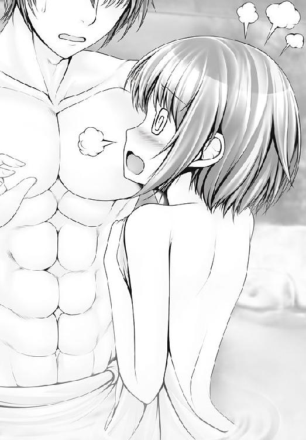
何の掛け値もなく、胸を張って言い切れる可憐である。
だが、それでも、女の子である自分の口から、えっちをして欲しいと言い出すことにはためらいがあった。
求められれば、いつでも開く覚悟のある身体である。
だが、自分から求めることは恥ずかしい。
純情であった。純真であった。
「あ......、あ......」
可憐は、緊張して。
「あが身は、なりなりてなりあまれるところひとところあり。かれ、このあが身のなりあまれるところをもちて、なが身のなりあはざるところにさしふたぎて......」
「な、何を言ってるのだ。可憐どの!?」
きゅ～～～～～～～～っ、と。
彼女は、恥ずかしさのあまり、顔から火を噴きそうになった。
「そこまでだよ！ 一路!!」
怒気にも勝る声が、頭上から聞こえてきた。
いっぽう、その頃......。静はというと......。
ひとり、滝に打たれていた。
ここは温泉地である。ただの滝ではない。
源泉そのままの掛け流し。60℃を超える熱湯を、静は浴び続けていた。
もちろん熱い。とてつもなく熱い。常人なら１秒と耐えられない温度である。
立ち上る湯気で視界は真っ白だ。
だが、静にはそれ以上に恥じ入ることがあった。
（師匠の役に立てなかった......）
役に立てなかった自分を恥じていた。
（自分が、気の修練を積んでいれば......！）
（一路どのの陽なる気をあてられても、我慢することができたはず......！）
（乳をさわられたぐらいで、赤面するとは......）
（自分は人間として成っていないッ!!）
と、そんなことを心の底から本気で思う女の子。
骨の髄から、武術一筋。
それが古舞静なのである。
その時だ。
「そこまでだよ！ 一路!!」
怒気にも勝る声が、露天風呂から轟いた。
露天風呂の奥にある岩場に、少女が立っていた。
月光を背に、逆光のシルエットが浮かぶ。
ひとりだけではない。ぞろぞろとぞろぞろと、合わせて数十人があとにつづいた。
ずいっと、赤毛の少女が進み出た。
「総長の胸を小さくするなんて、絶対にさせないんだから！」
「有菜の手下か!?」
少女は、グッと親指で自分を指して。
「聞いて驚くな、〝鳴神の暴風〟五十嵐蘭子とは私のことだ！」
「ふむ、そうか」
平然と、一路は受け流す。
「ちっとは驚きなさいよ！」
「驚くなと言ったのは、そっちであろうに」
「うるさい、うるさい、うるさーいっ！」
赤毛を振り乱し、蘭子は顔まで真っ赤になる。
「何をしたって無駄よ。古寺院だって爆破してやるんだから！ そうすれば巻物だって消えてなくなるわ！」
「そこまでする気か！」
「一路さま、ここはわたくしにお任せ下さい」
可憐が前へ出た。
「あの者たちが小細工を弄する前に、一刻も早く、古寺院へ」
「ハッ、あんた１人で何が出来るんだい？」
笑う蘭子に、可憐が告げた。
「感謝です」
「ハァ？」
蘭子は、可憐を馬鹿にするように肩をすくめた。
それほどに、可憐は華奢で細身な少女だった。
一路は、古寺院へと続く階段を、まっしぐらに駆け上がっていた。
「師匠！」
静の声だった。
「巻物が危ない！ 急ぐぞ!!」
「はいっ！」
２人は三段跳び、四段跳びで古寺院を目指した。
その時だ。
とてつもない爆発音が、後方から聞こえた。
一路と静は振り返らない。
ただ、ひたすらに前を向いて走る。
「可憐どの......！」
爆発が何を意味するのか、それを知っている一路と静は、きゅっと唇を嚙みしめて、古寺院の本堂に突入した。
うち捨てられた寺院には、人の気配はなく、ただ寂れた姿があるだけだ。
「あれが蔵ではないでしょうか」
静が言う。
一路は扉を蹴破り、中に突入した。
蔵の中には箱が散乱していた。
一路と静は、箱という箱を開け、それらしき巻物を探し当てる。
「これか？」
一路は巻物を手に取った。
結び目をほどき、中身を開いてみる。
巻物にはしっかりと、女体の絵に、ツボのポイントが記された図案が記されていた。
「これか！」
一路は巻物をふところにしまいこもうとした。
ところが、だ。
空気に触れた途端、図案の絵がみるみると薄れていくではないか。
「どういうことだ!?」
酸化しているのだ。
化学の知識にうとい一路は混乱した。
まだツボを覚えていない。
そして微細なコントロールのいる点穴は、一度見たぐらいで覚えられるものではない。
実際に打って、確かめて、会得するものだ。
「私に打ってください！」
静が言い出した。
「なにを言う、静」
「覚えているうちに、そのツボを私で確かめて下さい！」
「だが、この点穴は......！」
おっぱいを小さくしてしまうツボだ。
女性にとって、乳房がどれほどかけがえのないものか。
それを知る一路は、静への点穴をためらった。
「かまいません。活人の神髄を究めるため。いえ、久美恋どのを助けるためです！」
「しかし」
「久美恋どのを救出するためです！ 失敗は許されません！」
一路は静の本気を知った。
静の、一途なまでの純真を受け取った。
一路は誓った。
絶対の絶対に失敗するわけにはいかない、と。
「必ず、この点穴は決める！」
一路は、点穴を静の胸に打ち込んだ。
その途端、だ。
ぶちぶちぶちん！
静の乳を覆っていたブラが弾け飛んだ。
「なに!?」
左右に割れたブラのあわいから、まるまると満ちた双乳がこぼれる。
気のせいか、一路の目にも静の目にも、胸が大きくなっているように見えた。
「こ、これは......」
「貧乳点ではなく......、豊乳点だった......！」
驚愕に、２人は立ち尽くした。
「一路さま！ 静さん！ ご無事ですか!?」
可憐が本堂へ駆け込んできた。
そして、見る。
一回り大きくなったように見える静の胸を。
「貧乳点のツボは、間違いだったのですか......？」
「どうやら、そうらしい」
はちきれてしまった自分の胸を見つめながら、静は唇をかんだ。
「なんて無駄なツボ！」
可憐は絶望した。
「ただでさえ巨大な番長の胸を、これ以上大きくするツボなんて......！」
「時間がない。向かうぞ」
一路は歩き出した。
「でも、あの胸を突き破る方法を編み出さなければ、番長を倒すことは......」
不安を口にする静に、一路は言い切った。
「死中に活あり！」
「間に合ったか？」
夕暮れである。
一路たちは、総番長・有菜のいるビルの前に立っていた。
そこへだ。
「このまま、有菜さまのところに黙ってはいかせねえ」
ずらりと、壁のように不良が立ち並ぶ。
モヒカン、アイシャドウ、鎖じゃらじゃら。
カタチから入ったような不良たちだった。
「一路さま、集団戦はわたくしにお任せを」
また、可憐が前に立った。
「うむ、任せたぞ！」
一路と静は、縮地法を使って、不良たちを一気に突破した。
「てめえ、逃げるな」
「あなたたちの相手はわたくしです」
可憐は静かに告げた。
──と、そんな光景を久美恋は見ていた。
「可憐さん!?」
久美恋の顔が、みるみる真っ青に染まっていく。
ふふっ、と有菜は笑みを浮かべた。
「優しいな。恋敵の身を案じるとは」
「えーと、そういうわけではなくて......」
久美恋は別の不安に身をよじった。
可憐がこれから何をおっぱじめるのかを、久美恋はよく知っていたからだ。
「一路さまのために、この封印を解く日がやってきました」
可憐は両腕のリストバンドをほどいた。
めきっ。
リストバンドが落ちた途端、石畳に亀裂が入った。
つまらないハッタリだと、不良たちは両手を広げて、大きく笑う。
「けっ、何を始めるつもりだ」
「感謝の祈りです」
「はあっ!?」
馬鹿にするように、不良たちは爆笑した。
「一路さまが気を練ることで力を得るように、わたくしは生きとし生けるすべてに感謝を捧げることで、この星から偉大な力を授かるのです」
「なに言ってんだてめえ、わけわかんねえぞ」
「感謝する心の偉大さを分からぬとは」
悲しそうに可憐は両手を合わせた。
可憐は万物に対する愛を唱えた。
「右手を開いて母心、両手を開いて掌......」
淡い色をした小さな唇から、ブツブツとつぶやく声が漏れた。
可憐からあふれだす気持ちが、変な空間を作り出してゆく。
世界中の物理学者が泣いて逃げ出す超領域。
「何に祈ってやがる！」
カッ、と可憐の目が見開かれた。
「これが、愛！ シャイニング感謝ぁぁぁぁ──ッ！」
轟ォォォォォォーン！
稲妻のような音が轟いて、可憐の周囲が爆発した。
桁違いの火焰が上がる。
竜のようにのたうつ炎は周囲の建物を吹き飛ばし、乱れ飛ぶ炎の欠片は火の粉をまき散らした。
「うおわああああああああああああああああああああっ！」
勇ましかった不良どもは、四方八方に吹き飛んでいった。
これが、古寺院で一路と静が耳にした爆発音の正体であった......。
「な......なにが......？」
ボロボロになった、不良たち。
顔を上げる。が、一帯はもうもうと立ちこめる爆煙で満たされていた。
視覚を頼りにしようにも、一面は巻き上げられた砂埃や水蒸気で白く煙っている。
ゆっくりと晴れてゆく煙の彼方から、１人の少女の姿が浮かびあがる。
破壊され、焦がし尽くされた石畳の上に、合掌したままの可憐が立っていたのだ。
「ど......、どういうことだそりゃあ!?」「なんで、てめえだけ、無事なんだよッ！」
難を逃れ、生き残った不良たちは、怒鳴り声をあげた。
可憐は合掌をほどくと、何事もなかったかのように、慈母のような微笑みを向けた。
「感謝です」
「わけわかんねえ!!」
「現実から目を背けていては、前に進めません」
「てめえ、魔法でも使えるのか！」
「いいえ、感謝です」
「ふ、ふざけんなあああああああああ！」
あまりの理不尽さに、不良たちは雄叫んだ。
しかし、可憐は穏やかにつぶやくだけだ。
「感謝の力は、偉大なのです」
残念ながら、可憐の言葉は本当だった。
一路たちの使う点穴術が気功という自然エネルギーを利用するように、可憐はこの世にあまねくすべての者に対する深い愛情によって、地球と一体化してしまう。
惑星との一体化によって生じる超自我空間〝天然自在の境地〟の中では、彼女のうちから溢れる愛が壮絶な破壊力を生成し、炸裂する。炸裂してしまうのだ。
正直、わけのわからない世界ではある。
これまで多くの科学者が「感謝」と「破壊力」との因果関係を突き止めようとしたが、１人残らず無残に討ち死にを遂げていった......。
「わたくしは純条可憐。天上天下唯我独尊感謝拳の伝承者です」
「な......、なんだそれ？？？」
可憐は、天使のように無垢な笑みを浮かべ。
「天地自然に対する深い愛から生まれ出ずる拳です」
「だ、だから、なんで感謝の気持ちが破壊力になるんだよ!!」
「分かりませんか？」
「分かるわけないだろう!!」
「ならば、もう一撃、お見舞い申し上げましょう」
「に、逃げろぉぉぉぉぉぉぉぉぉぉぉ！」
可憐の感謝が炸裂した。
死屍、累々。
──それをビルの窓から、久美恋は見ていた。
「ああ......、間に合わなかった」
がっくりと久美恋は崩れ落ちた。
「なんなんだ、あれは!?」
有菜は呆然とする。......暇もなく。
「久美恋どのを取り戻しに来たぞ！」
バンッと扉を蹴破って一路が現れた。続いて静も。
「来たな、下郎！」
有菜は、むしろ喜ぶような気色を笑みに浮かべた。
「貴様なら来ると思っていたよ。喧嘩屋はそうじゃなくっちゃね」
「オレは喧嘩屋ではない」
「じゃあ何だって言うのさ」
「おぬしを活かしに来た！」
一路は、番長のふところに飛び込んだ。
「この点穴で、活かせる！」
一路は、有菜の胸めがけ、指突をくらわせた。
ハハッ、と有菜は笑った。
「効かないよ！」
だが、一路が突いたのは乳そのものではなかった。
首の下でぷっくりと浮き上がっている鎖骨のやや下。
乳のふくらみか、そうでないかの微妙なあたりを突いたのだ。
「あのツボは......!!」
静は息を呑んだ。
「師匠！ そのツボは貧乳点ではありません！」
「いや、これでいい！」
一路は言い切った。
次の瞬間だ。
「！」
有菜は自分の胸に異変を感じた。
乳が、爆発した。
正確には、下着代わりに当てていたサラシが、胸の膨張に耐えきれずにハチ切れたのだ。
「今だ！」
一路は、この瞬間を待っていた。
サラシが弾け飛んだ一瞬、拘束から解放された有菜の乳房が、ぶるんと大きく揺れた。
その瞬きほどの刹那に、あらわになるもの。
有菜の、胸の谷間であった。
「奪魂致命点ッ!!」
一路は、乳房と乳房の間に開いた空隙、すなわち心臓に最も近い場所に点穴を決めた。
「くっ............！」
がくり、と有菜は力を失って、膝から崩れ落ちた。
「久美恋どの、大丈夫か!?」
「一路くんのほうこそ、大丈夫？」
「ん？」
「アタマが」
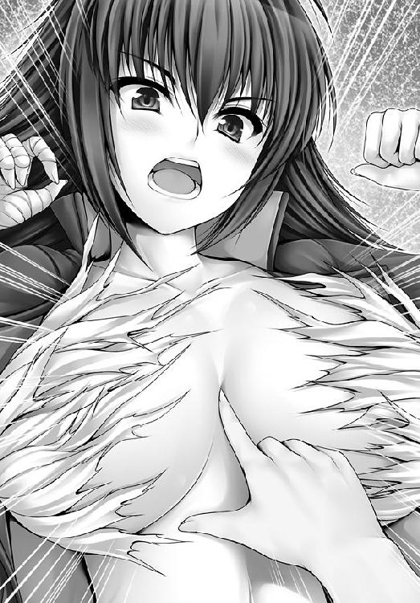
にっこりと笑って、久美恋は一路のセクハラを叱りつけた。
「もーっ、一路くんったら、いい加減にしなさ～～～～～～～～い！」
幼なじみとして、身元引受人として、ここは一路を叱るところだった。
ボコボコボコボコ............。
なぜか、暴力だった。
......ややあって。
可憐が後から駆けつけた。
一路の勝利を確信していた可憐は、一路の顔があまりにもひどく腫れ上がっていることにびっくりした。
「い、一路さま、負けたのですか!?」
「いや、勝った」
「では、なにゆえにそのような怪我を......」
「深くは聞かないでくれ......」
可憐はちらりと、久美恋を見て。
「まあ、だいたいの想像はつきますけれど......」
いささか呆れた目をして、可憐は久美恋を見た。
「だ、だって、一路くんが有菜さんの胸を......、胸を......！」
久美恋が訴える。
まあっ、と可憐は顔を明るくさせた。
「点穴の新奥義が成功したのですね！」
「あなたたち、いったいどんな修行をしてきたのよ!?」
「よくぞ聞いてくれた！」
一路たちは胸を張って、正直に答えた。
「オレは新しいツボを手に入れた」
「混浴をさせていただきました」と、可憐。
「一路どのに胸を大きくしてもらいました」と、静。
すべて、正直に答えた。
「はあぁぁぁぁ？」
ぴくりと久美恋のマユが吊り上がった。
「それって、遊んでただけじゃないの～～～～！」
「オレたちは久美恋どのを助けたい一心で、真剣に」
「そうです、真剣に混浴を」と、可憐。
「真剣に乳を......！」と、静。
「もーっ、そんな真剣さなんて、絶対に信じませんっ!!」
「それは納得がいかない！」
一路は悲しかった。
だから久美恋に、自分が一生懸命、作戦を考えたことを語った。
「番長のバストがサラシを破壊した刹那、その１秒足らずの時間に、弾けて開いた胸の谷間の空隙に指突を入れるという、電光石火の技を......」
「だから、なんだって言うのよ!?」
すると、一路たちの元へ有菜が近寄ってきた。
「まだ闘おうというのなら、私が相手をするぞ」
一路たちを守ろうと、静が立ち塞がった。
「いや」
有菜はさっぱりと頭を下げて。
「負けた。アタシの完敗だよ」
すると、一路も応えた。
「いや、オレも自分の弱さをまた１つ知った。礼を言う」
「お前のオンナになろう」
「なんですって？」
声を上げたのは、久美恋だった。
「敗者は勝者のモノになる。それが番長界のルール」
「だからそういう迷惑なルールは捨てて下さいっ！」
「いや、これは番長界のルールだから」
「断る」
首を横に振ったのは一路だった。
「どうして!?」
有菜は驚いた。
「アタシをオンナにすれば、アンタがこの島のナンバーワンなんだよ！」
「オレは争いごとは好まぬ。そのような頂点を目指すつもりはない」
「いや、誰がなんと言おうと、アタシはお前のオンナになるね！ 決めた！」
「断じて断る」
「あんたがダメだって言ってもダメさ」
と、有菜は、ぽろ～んとあるものをさらけ出した。
「活人の研究に使うがいいよ、アタシの胸を」
「む......、俄然、心が動いてきた」
「一路くん────!?」
一路は自分に噓が吐けない。
実に正直な男だった。
「有菜さんも、冷静になって下さいっ！」
「それが番長界のルール」
「だから、そんなルール捨てて下さいっ！」
「ともあれ、活人流、大勝利ということだな」
「はい！」「嬉しいですっ」
静と可憐は、手を合わせて喜んだ。
怒ったのは久美恋だ。
「一路くんは反省しなさいっ！」
「なぜ!?」
心の底から、一路は当惑した。
「活人流は久美恋どのを救い、また有菜どのも争いの道から解き放ったではないか！」
「救う手段が問題だって言うんですっ！」
「いいや活人流に間違いはない!!」
「なんで自信満々なのよ!?」
「それは久美恋どのが師匠に点穴をされたことがないからです」と、静。
点穴というのはおっぱいタッチであるからして、久美恋は顔を赤くするしかなかった。
「にゃっ!?」
「師匠の指に触れられた時の温かみ、痺れるような、切ない感覚......」
「それって......単にえっちなことをしてるだけのような......」
「いいえ！ 活人流です！」
いくら相手が久美恋でも、これだけは譲れないとばかりに静は抗弁した。
「静さん、無理じいはよくありませんわ」
仲裁役の可憐が割って入った。
「強制は和を成す活人流の真理に反するもの。活人流はわたくしたちだけで盛り上げていけばよいではないですか」
久美恋は納得できなかった。
「そんなのダメーっ！」
「まったく、久美恋さんは素直じゃありませんわ」やれやれと、可憐。
「バレバレです」と、静もため息。
「ええっ、わたしがひねくれてるってことになるの!?」
と、そこへ一路が口をはさんできた。
「可憐どのも静も聞いてくれ。オレたちは褒めてもらうために活人流をしているわけではない。久美恋どのを助けられたのだからよいではないか」
「さすが一路さま......」
「師匠の言うとおりです......」
「勝った者に従うのが番長界のルール......」
なぜか有菜までうなずく。
それぞれの理由で納得する、３人の娘たちだった。
そんな光景を、久美恋は見て............。
「悪の元凶はやっぱり一路くんなのね」
「オレなのか!?」
一路は自分を指さした。
「決まってるでしょう！ おっぱい触って世界平和だなんてバカなこと思いついて！」
「無駄な争いを避けられたではないか！ 今回も！」
「エッチなことをしてるだけじゃないのっ!!」
久美恋の声にはますますと怒気が。
「いや、これは久美恋どののためでもあるのだ」
「なんでわたしのためになるのよ!?」
「備えあれば憂いなし。日々、点穴の修行を積むことが久美恋どのを守るためでもある」
「結局、エッチしまくりってことじゃないの!!」
「誤解だ！」
ぷちん......。
久美恋は何かがキレた音を聞いた。
それは神経の音だった。神経がブチ切れてしまう音だった。
「一路くん、そこに座って」
「い、いや、しかし......」
久美恋から不穏なオーラを感じた一路は、逃げようとした。
がしっ。
久美恋は一路の肩をつかんだ。
すごい握力だった。
握力だけなら、力任せに逃げられたかもしれない。
気迫だった。
蛇ににらまれた蛙のように、一路はおとなしくなるしかなかった。
にっこりと、久美恋は天使のような笑みを浮かべて。
「いいから、そこに座ってくれるわよね、一路くん」
恐怖に震え一路はちょこんと正座をした。
それからのことは............。
御統活人流とは。
闘わずに、和を成す。
そんな途方もない〝路〟に邁進する拳法である。
その道のりは、果てしなく遠い。
三 キラリと輝く、剣と満月！
東雲心眼流【しののめ・しんがんりゅう】
沖縄に伝わる暗殺の武門〝八門〟の一流派。
剣を使うことから、古舞静の出自である不知火流と混同されやすいが、心眼流の神髄は〝瞳術〟と呼ばれる、心の技にある。
「気配を消すことで、敵の心に潜り込み、相手の神経系を支配、身動きの取れない状態に追い込んだあとでトドメを刺す」
剣は、オマケの道具に過ぎない。
自転車競技にバイクで勝負を挑むような理不尽さがあるため、他流派からは邪道と忌み嫌われることが多いが、本人たちは意に介さず、粛々と暗殺を実行する。
とはいえ、彼らはただの殺人鬼ではない。
己を戒めるためや、門派の秘密を外に漏らさないための、厳しい戒律を持ち、日々、技の研鑽と自己の鍛錬に明け暮れている。
修行といっても、暗殺の修行なのだけれども......。
よく磨かれた床。息を吐く音すらこだましそうな静謐な空気。
ここは道場であった。
男子根絶委員会の学生寮にある、武道場である。
中央には剣を構えた、２人の少女が相対していた。
１人は市砂ヒトミ。
一路を追って委員会を辞めた古舞静のあとを継いで、桜組の筆頭をつとめる少女である。
対する少女は、ヒトミよりも小柄である。
必要以上に小さく見えるのは、身長ほどもある長剣を背負っているからだろう。
真剣による対戦を目前にしながら、少女は双眼を閉じていた。
そんな態度にヒトミは苛立った。
（あたしをナメてるのか？）
馬鹿にされた気がしたからだ。
「本気でやるよ」
瞑目の少女は短く答えた。
「望むところ」
──そんな剣士たちを見つめる乙女たちがいた。
勝負を観戦しているのは、男子根絶委員会の頂点、最高会議の面々である。
それぞれの組の代表をつとめる筆頭たちが出席する最高会議。
桃組筆頭であるアリカも、その中にいた。
「あの娘は何者なの？ 悠子」
アリカは隣に座る少女に聞いた。
ふわふわな髪の毛が愛らしい。名を独萬路悠子と言う。
アリカと同格の、梅組筆頭である。
「ヒトミも、委員会の中では有数の剣の腕よ」
「心眼剣には誰も勝てないわ」
フフッ、と独萬路悠子は微笑んだ。
「どういう意味？」
アリカが問い質す。
「すぐに分かりますわ」
そう言って、独萬路は勝負に臨む２人に目をむけるだけだった。
そして、アリカたちの奥には御簾があり、そこには人の気配があった。
『........................』
御簾の向こうにいる少女は、男子根絶委員会の創設者である。
男根会すべての乙女たちに慕われている、究極の存在。つまり全員の〝お姉様〟だ。
一同の目が、中央で対峙する２人に注がれていた。
なぜ、彼女たちはここに集っているのか？
男根会の宿敵となった御統一路に対する次の刺客の実力を見極めようとしていたのだ。
──勝負が始まった！
先手を取ったのは長剣の少女だった。
閉じていた目を見開き、ヒトミを焦点におさめる。
「念っ！」
「な............！」
少女と目をあわせた瞬間、ヒトミは動けなくなった。
頭のてっぺんから爪先まで、がんじがらめになったように動けなくなる。
金縛りだ。
動けなくなったヒトミに向かって、少女は音もなく剣を一閃した。
「............っ！」
ゴトッ......。
ヒトミの腕から、剣が落ちた。
少女の刀は血で濡れてはいなかった。
刃はヒトミの顔面すれすれに止まって、何も斬ってはいない。
「これが、心眼剣......！」
圧倒的な勝負の結果に、ヒトミはあぜんとなった。
「どうですか？ 私が見いだした剣士、紅斬香の腕前は」
独萬路は隣のアリカへ、満足げな笑みを向けた。
「東雲心眼流......、瞳術という力で相手の心を掌握し、相手の身動きを封じる技なのですわ」
「な............、それって剣法って言えないんじゃ......」
「勝てばいいのですわ」独萬路は言い。
「これで一路を殺せますわ」
「ええっ！」
アリカは驚いた。
「〝八門〟はご存じ？」独萬路が言う。
「はちもん？」
パチモンやポケモンなら聞いたことはある。その程度の知識のアリカである。
「沖縄に伝わる暗殺者の家系ですわ。彼女はその血統ですの」
「あ......あんさつ......!?」
アリカはゴクリと息を呑んだ。
「彼女は暗殺者なのよ」
「暗殺者!? 何を考えてるのよアナタ!!」
「あら。男子根絶委員会の宿敵を抹殺するのに、何の差し障りがあるといいますの？」
「うっ」
アリカはたじろいだ。
「そ、それはそうかもしれないけれど、殺してしまうなんて、野蛮なことだわ......」
「あたしは賛成よ」
最初に言ったのはヒトミだった。
「この次はやられないからね」
と、斬香に告げて、今度は独萬路を向いて。
「御統一路は我々が何度も苦汁をのまされた相手。必勝を期するのは当然のことです」
そんなことを言いつつ、ヒトミは心の中でこんなことを考えている。
（一路がフヌケになれば、静お姉様が戻ってくる......!!）
いっぽう独萬路は、したりと笑みを浮かべていた。
「あとはアリカさんの返事よ」
「アリカも賛成よね」
独萬路とヒトミはそろってアリカを見つめた。
「わ、私は、ちょっと......」
アリカは言い淀んだ。
「まさか、反対なの？」ヒトミが聞く。
「そ、そういうわけじゃないけれど......」
「じゃあ賛成ですわね」と、独萬路。
「い、いや......」
アリカは困り果てた。
その時だ。御簾の向こうから声がした。
『わらわは悲しい......』
「「「超お姉様っ！」」」
御簾の奥からの声に、アリカやヒトミ、独萬路たちはそろって声をあげた。
超お姉様。
お姉様のなかのお姉様、そういう意味の称号である。
あまり、頭のよさげなネーミングではないのだが、それを言い出すと男子根絶委員会なる名称からして頭が悪い。つまりは彼女たちに、そのあたりの自覚がナイということであろう。
悲しい現実である。
『男のことで皆が揉めるだけで、わらわは悲しい気持ちになる』
「そうでございますわ！ 男なんて殺してしまうに限ります！」
そう行って、独萬路が立ち上がった。
「賛成っ」と、ヒトミも手を挙げる。
「ちょ、ちょっと待って！」
アリカは慌てた。
すると、独萬路は怪訝な目をして。
「なんですの？ 夢野さん、オトコの味方をしようとおっしゃいますの？」
「そ、そんなわけないでしょ！ あんなヤツ、死んでしまえばいいのよ！ 八つ裂きでも足りないぐらいだわ!!」
「では、全会一致で決定ということで」「うん」
独萬路とヒトミが頷きあった。
しまった......。と、アリカは窮地に陥った自分に気付いた。
（ど、ど、ど、どうしよう～っ！）
アリカは焦った。顔色は変えないが、胸のうちは嵐だ。
（殺してしまうなんて、やりすぎだわ）
なぜ、そんなふうに考えてしまうのか。アリカは自分でも分かっていない。
ただ、表立って彼を弁護するわけにもいかず、心を悩ませるだけだ。
（どうしたらいいのかしら......）
そんな境地の彼女を救ったのは、氷のような声だった。
「今は無理だ」
剣を収めた斬香であった。
「免許皆伝に至らぬ私には、満月一殺の戒律がある」
「まんげつ、いっさつ？」
「私が殺生を許されるのは、満月の出ている間のみ。それ以外の時間には、血の一滴も流すことは許されていない」
すっと、斬香はヒトミを見た。
「......！」
その殺気に、ヒトミはぞくっと震えた。
「本当なの？」
「むやみに人殺しをしないようにという戒律だ」
「次の満月というと......」
独萬路がつぶやいた。
「三日後ですね」と、ヒトミ。
「それならば」
こくり、と斬香はうなずいた。
「三日後か......」
会議も終わり、廊下に出たところで、アリカはため息をついた。
「よかったわね、ひとまず彼が無事で」
背後から、星乃歪美が声をかけてきた。
「な、なななな、何を言ってるの！ っていうか、参加してない歪美がどうして会議の内容を知っているのよ！」
「盗聴」
「............」
そうだった。歪美には常識という言葉は通用しないんだった。改めてアリカは思い直した。
「で、彼をどうやって守るつもりなの？」
「べ、別に、あんなの、生きようと死のうとどうだって......」
「ふうん」
にやにや、と歪美は笑う。
「わ......、私は、アイツの馬鹿をやめさせたいだけよ、そ......それだけなんだから」
「あら、そう」
にやりにやり、と歪美は意味深な笑みを浮かべ続けるだけだ。
「本当だったらぁ！」
アリカは顔を真っ赤にするばかり......。
（本当になんとかしなきゃ......）
拳をぎゅっ、と握りしめて、アリカは思う。
「......に、しても変な掟のおかげで助かったわね」
歪美の言葉に、アリカは斬香のことを思い出した。
「満月一殺って......」
「私たちとは別世界の人みたいね、彼女」
（歪美も相当、別世界の人だと思うよ......）
と、心の中でため息をつくアリカだった。
夜である。
鳴神島に浮かぶ丸い月は、夜空に張り付いているかのようにくっきりと輝いていた。
斬香がいる。草むらの上に仁王立ちとなり、剣に意識を集中させている。
月明かりを受けて、剣の刃が白銀に光る。
そんな彼女の前に、人影がさした。
「斬香さん............」
アリカであった。
静かに剣を下ろし、斬香は振り向いた。
「どうしたのですか？ こんな夜更けに」
アリカはどうやって話を切り出したものか、しばし迷ったが、思い切って正面から聞いてみることにした。
「暗殺って......、本気なの？」
「はい」
「憎いわけでもない相手を斬れるの!?」
「もちろん」
斬香は淀みなく答える。迷いなどない。
「心配してくれているのなら、気遣いは無用。心眼剣は心をゼロにする剣。心を消すことで気配を断ち、相手の心にもぐりこみ、それを支配する。だから私は何も考えてはいけない。思ってはいけない」
「そんなの、機械と同じじゃないの！」
「そう、私は一本の刀。武器はただの道具。思いは迷いに通じ、迷いは剣を曇らせる」
考えないからこそ純粋な武器、ということだ。
「そんなのよくないよ！ 斬るんだよ!?」
「どうして？ 悪い奴を倒すのは正しいこと」
「違うよ。闘わないのがベストだよ！」
言って、アリカは自分の言葉に耳を疑ってしまった。
（私、一路と同じこと言ってる......!!）
とっても恥ずかしい気持ちになって、アリカは顔を真っ赤にさせた。
と、首を傾げるようにして斬香が聞いてきた。
「どうして、闘わないのがベストなの？」
「だって悪い奴が悪くない奴になって、仲良く出来るのが一番いいことでしょ。敵と友達になれたら、敵が消えたことにならない？」
「........................」
しばし考えて、斬香は首を横に振った。
「それは寝言というものだ」
そして、あくる日の朝である。
ここは学生寮、一路の部屋だ。
すうっと、扉が開く。
「おはようございます......」
囁くような声で、寝間着姿の少女が現れる。
純条可憐、だ。
「一路さまったら、可愛らしい寝顔ですわ」
すやすやと眠る一路の寝顔を見て、可憐はにこっと微笑んだ。
足音を忍ばせながら、一路の眠る布団に近づく。
そっと掛け布団をあげて、身体を中に滑り込ませる。
可憐は一路の隣にピッタリと寄り添う形になった。
「うふふ」
と、笑んだ時だ。
「っ！」
一路は、がばっと動き出して、可憐を抱き寄せた。
同時にその手は彼女の淡い胸を触っていた。
密やかなふくらみであった。女性らしく慎ましやかなふたつの丘であった。
そのバストを触られた途端、可憐は言い放った。
「お見事ですわ！」
「うむ」
むくり、と一路は起き上がった。
手のひらは可憐の神秘的な丘に置かれたままである。さすがである。
可憐は尊敬のまなざしを一路に向けるばかりで。
「さすが一路さまですわ。眠りながらにして、身体を反射的に反応させるとは」
「うむ、これも修行の成果だ。可憐どのの協力のおかげだ」
まあ、と可憐は頰を染めて。
「これぐらい。一路さまのお役に立つことが出来て、わたくしも嬉しいですわ」
「これで無意識のうちにも技を放つことが出来る」
「さらに修行をして、ばっちりのタイミングで何度でも成功するようにいたしましょう」
修行の名目でスキンシップを求めるあたり、可憐もしたたかである。
「うむ」
「一路くん、朝ご飯、出来たよ～」
ばっちりのタイミングで久美恋が現れて。
大・激・怒。
......で、まあ、一路はズコズコのボコボコにされるわけでありまして......。
「誤解だ......」
タンコブだらけの顔で、一路はうめいた。
「一緒に布団に入っておいて、何が誤解なのよっ！」
ぷんぷんと頰を膨らませて、久美恋はお冠である。
「無意識のうちに技を放つ修行をしていたのだ」
「修行ぉ？」
小指の爪ほどにも信じられず、久美恋は眉をひそめた。
「本当だ。本当に修行なのだ」
とはいえ、一路はマジメに訴えてくる。
一路は馬鹿かもしれないが噓をつく人間ではない。久美恋だって、それは分かっている。
ちらりとだけ、久美恋は聞く耳を持つことにした。
「......何の修行をしてたのよ？」
「眠っていても、胸に手を伸ばすことが出来るかという修行だ」
「もーっ、ばかぁ～～～～～～っ！」
久美恋は頭を抱えた。
いっぽう、一路はどこまでも真剣だ。
「危機はいつ訪れるか分からぬ。それに備えるのが武道家」
「もー、毎回毎回、めちゃくちゃなこと言わないで～～～～～～っ！」
久美恋の悲鳴と入れ替わるように、あはははは、と鍵子がやってきた。
「ホントに一路クンには尊敬させられるわ～」
「なんでっ!?」久美恋は耳を疑った。
「だって、フツー、そんな馬鹿な修行を次から次へと思いついたりしないよ」
と鍵子は笑った。久美恋は笑えない。
「とにかくっ！ 一路くんは女の子との付き合い方に節度がなさすぎるの!!」
ぷうっ、と頰を膨らませると、久美恋は両手を腰にあてた。
かたや一路は、彼女の怒りがまったく理解できず。
「ただ、一緒に寝ていただけではないか」
「それのどこが〝ただ〟なんですか～っ！」
「修行なのだ」
「世間ではそんな話は通用しませんっ！」
「世間ではどうなるのだ？」
尋ねる一路に、久美恋はきっぱりと言った。
「不純異性交遊ですっ！」
「不純ではないっ！」
「純粋異性交遊ですわ」
と、可憐が言うと。
「修行なんでしょ」と、久美恋は返す。
「うぅ......」
痛いところを突かれた可憐である。
「うーむ」
一路は本気で困ってしまった。
修行をすることが悪いことだとは、これっぽっちも思っていないからだ。
だから余計に、久美恋は頭が痛かった............。
「だーかーらー、一路くんは、簡単に女の子と接近しすぎなんですっ！」
「それは、いけないことなのか？」
真顔で尋ね返してきた。この男は。
「わたくしはかまいませんわっ」と、可憐。
「それは助かる」
「当事者同士がイイって言ってるんだから、いーんじゃない？」と、鍵子。
「鍵子ぉ～」
彼女の裏切りに久美恋は驚いた。
鍵子はいたってスマイルで。
「もちろん、嫌がってる子にするのはダメだけどね」
そうだよ～、と久美恋は言って。
「一路くんったら、何かあると、ぜんぶエッチで解決しようとするんだもん！」
「エッチではない。点穴だ」
「世間には、その理屈は通用しませんっ！」
ぴしゃり、と久美恋は言い切って。
「とにかくっ、一路くんはむやみやたらとエッチなことするの、禁止！」
すると、可憐が聞いてきた。
「デートならよいのですか？」
「えっ......、そ、それは」
もにょもにょと、久美恋は言い淀んだ。
「それはいいんじゃない？ ねえ、久美恋」
ニマニマとした顔で、鍵子が言ってくる。
寮から出て、繁華街へと向かう下り坂である。
罰ゲーム、というわけではないが、一路はお使いに出ることになった。
お使いはよいにしても、修行を否定されたことに一路は納得がいかない。
「久美恋どのは分かっておらぬ。危機はいつどこからやってくるか分からぬというのに......」
その時だ。一路の目の前に少女が現れた。
「私にトドメをさされなさい！」
アリカだった。手には銃。
一路の返事など待たない。アリカはすぐにトリガーを引いた。
バリバリッと電流が走る。テーザー銃であった。
「これぞ危機！」
と、一路は飛んで攻撃をかわす。そしてアリカを見据えると。
「おお、アリカどのか！ こうでなくてはな！」
「えっ」
一路の返事にアリカはドキッとなった。
（わ......私を待ってたの？ って、何でドキッとするのよ!!）
自分に怒り、アリカは一路に八つ当たりをした。銃のトリガーを引く。引きまくる。
バリバリバリバリバリバリッ！
電撃の嵐が吹き荒れた。
が、動かない的にさえ当たらない射撃の腕である。動揺で狙いが甘くなれば、なおのこと一路に命中するわけもない。
スカッ。
あっという間にエネルギー切れになった。
一路はゆうゆうと彼女の懐に飛び込んで。
「渦勁真空刃ッ！」
たちまちアリカの服が切り裂かれた。
花びらのように舞い散る布地のあわいから、白雪のような素肌が露わになる。
美しいカタチをした乳房が、ポロリとこぼれでた。
実に見事な、綺麗なバストであった。
ふむ、と一路は納得した。
「やはり危機というものは、どこでやってくるか分からぬものだな」
「にゃ!! にゃにを言ってるの!? あなたって人は!!」
アリカは顔を真っ赤にした。真っ赤にするしかない。
「アリカどののおかげで、オレは正しいと分かった」
「はああああっ!?」
だが、いったん調子づいた一路は止まらない。
「点穴っ！」
一路の指先が、アリカのふくらみに沈み込んだ。
「ひゃあうんっ！」
もみもみ。もみもみ。
「あ......あっ......あなた！ もう、どうなっても知らないんだからぁ～～～～～～っ!!」
またしても、点穴の餌食になるアリカなのだった............。
──んで、夕暮れの男子根絶委員会、学生寮である。
「............」
アリカの表情は複雑だ。
にやにや、真っ赤、ムスッと頰を膨らませて、よく分からないことになっている。
「............」
同じ無言でも、歪美は実に意味深な顔で、アリカに話しかけてきた。
「胸なんか触られちゃって、気持ちよかったとか？」
「だ、誰がよっ！」
そんなことを言いながらも、アリカの顔は真っ赤だ。
「わ、私は、殺されるよりマシだと思って......」
「先にアイツを倒してしまえば、暗殺指令も止まるから？」
「べ、別に......」
「ふうん」
歪美はニヤニヤを止めない。
アリカの本心を見透かしたような目をして。
「アナタが彼女になってあげれば？」
「ふえええっ!?」
アリカは、口から心臓が飛び出しそうになった。
「な、なにを言ってるのよっ！ 歪美っ!! なんでそんな話になるのよっ!!」
アリカは焦りを、歪美は楽しがっているような顔つきで。
「こういうのよ、『私が彼女になってあげるから、他の子にはエッチなことしないで』って」
「な、なんで私なのよっ!?」
「一路はアリカの胸に興味を持っているのだから、彼の好奇心をアリカが満たしてしまえば、アイツは二度と不埒なことはしないからって、暗殺を止められるのではないの？」
「そ、そんにゃっ!?」
一瞬、アリカは頭が真っ白になった。
５秒、10秒、物言わぬ石像のように思考停止したあとで。
「むりむりむり！ むりむりむりむりむり、むりだったら!!」
当たり前のことだが、男の子と付き合ったら、男根会にはいられないのだ。
「ふーん、アイツが死んでもいいんだぁ」
ううっ、とアリカはたじろいだ。
しかし、すぐに鼻息をフンとならして。
「いいわよ、あんなヤツ、せいせいするわ」
「じゃ、よかったじゃないの。成敗してもらえて」
「........................」
ぶすぶすぶすぶす、と。
アリカの頭の上に黒煙のような気配が漂った。
歪美に言ってやりたいことはこんもりとあったのだけれど、アリカは口に出来なかった。
「わ、私は別に......」
自分の気持ちを認めたくない。照れくさい。恥ずかしすぎる。
アリカは顔を焼きリンゴのようにした。
そんな彼女を見て、歪美は。
「......完全なる不完全燃焼ね」
「ゆ、歪美のいじわる！ だ、だいたいどうやってデートに誘うのよっ!?」
アリカは生粋の男根会っ娘であった。
男の子との付き合い方など、露ほどにも知らないのだ。
「色仕掛け」
「それじゃ、エロオンナじゃないの！」
「見てる私は面白いんだけど」
「私は全然っ面白くない～～～～～～っ！」
ふふっ、と歪美は意味深な視線を向けて、部屋を出て行くのだった。
「もーっ！ 無責任～～～～!!」
無情に震えるアリカの声が、廊下にまで響き渡った。
また、夜が訪れていた。
空には限りなく真円に近い月が浮かんでいる。
出撃前夜である。
ここは男子根絶委員会の武道場、その近くにある井戸である。
斬香は桶に汲んだ水をかぶる。冷水である。
濡れて布地が透けた胸元に、紋様のようなものが透けて見えた。
傷痕のようでもある。
それは心眼流に入門したときに、師である母から刻まれた刻印だ。
『殺すか、殺されるか。その狭間に立つのが我が心眼流。刃のような生き方が八門の血統の宿命』
斬香は母の言葉を思い出していた。
『純潔を守りなさい、守れなくば死を選びなさい』
それが彼女の家の掟だった。
「死を......」
斬香は言葉を嚙みしめた。
──そして、暗殺の日が来た。
まだ、昼というには早い時間である。
真っ先に行動に出たのは、アリカだった。
（斬香がやってくるのは夜......）
それまでの間、斬香に会わせないようにしたい。
アリカはそんな思いで、一路を呼び出していた。
繁華街からもほど近く、お互いの寮からもちょうど中間にある公園である。
敷地内には、貸しボートがあるほどの広さをした池もある。
アリカにとっては、屈辱の地でもある。
だが、今日の彼女は違っていた。
いかにもといったおめかし。フリルのスカート。完全なデートルックである。
なのに、一路に向かって言うのだ。
「べ、別に、アンタのためにやったことじゃないのよ！」
頰を紅葉のように赤らめて。
「誤解しないでよ！ アナタに大事な話があるだけなんだからっ！」
ん？ と一路は腕を組み。
「それはデートの誘いというものか？」
「違うわよっ！」
「なんだ違うのか」
あっさりと一路が言うものだから、アリカは激情した。
「あんた、どんだけ、自分を高く見積もっているのよっ！」
久美恋に言われた言葉を思い出し、一路は言った。
「デートでもないのに、女の子と付き合うわけにはいかぬ」
「なによそれ！ 世界中の女の子があんたに夢中だとでも思っているの!?」
「アリカどの、なぜ怒っているのだ？」
一路は久美恋の言いつけを守っていただけである。悪気はない。
「とにかくっ！ なんでもいいから一緒に来て欲しいのっ！」
と、アリカが焦れた時だ。
ザンッ。
一筋の銀光が、きらめいた。
剣である。長剣を手にした少女が、２人の前に着地した。
「斬香っ、なんで!?」
今はまだ昼だ。太陽が出ている。
アリカの問いかけに、斬香は無言で空を指さした。
西の空に、薄ぼんやりと白い月が浮かんでいる。
丸々と満ちた月が。
（しまった......！）
アリカは『満月＝夜』と勝手に思い込んでいた自分の軽率さを呪った。
「恨みはないが、死んでもらう」
身長よりも大きな剣を手にして、斬香は一路を見据える。
「おぬしは......！」
一路の問いを、アリカが遮った。
「逃げるわよっ！」
アリカは一路の手を握って、ひっぱるように走り出す。
一目散に、一目散に逃げた。
道路を横切り、階段を駆け下り、狭い路地を抜け、公園に駆け込み、公衆トイレを見つけた彼女は、すぐさま中に飛び込んだ。
カチャリと個室の鍵を下ろし、ホッと一息をつく。
「ここまで逃げれば、ひとまず安心でしょ......」
アリカは、自分が一路と２人きりであることに気付いた。
しかも、ここはとっても狭い場所。
「な、なななな、なんで、２人きりなのよ～～～～っ!!」
アリカは外まで聞こえそうな声を張り上げてしまった。
「気付かれるぞ、アリカどの」
「ご、ごめんなさい......っ」
これでは何のために助けようとしたのか分からない。
アリカは自分の失敗に赤面した。
（斬香と出会わせるわけに、いかないのに......）
アリカの焦りを察したのか、一路が聞いてきた。
「おぬしの知り合いなのか？ あの剣士は」
「あなたを倒しにきたのよ。でも、闘って欲しくないの！」
「なぜだ」
「あの娘は完璧な暗殺者なの!!」
アリカは、一路に斬香の恐ろしさを告げた。
その能力と強さを。
「彼女の暗殺剣は心を操る剣よ。最強なの。誰も止めることはできない」
「無敵の剣などあるものか。形あるものには必ず隙があるものだ」
「あれは剣術ではないわ！ 闘った時にはすでに負けてるの！ 心を支配する剣に、誰が勝てるっていうの!?」
アリカは怒った。一路の頑固さが許せなかった。
「逃げてどうなるものでもあるまい」
「それでも逃げるのよ！ 彼女は今日１日しか剣を振るえないの！ だから逃げれば助かるわ！」
「それで......、彼女はどうなるのだ？」
意外な質問を、一路は口にした。
「えっ」
「オレが逃げおおせたとして、彼女はどうなるのだ？」
「それは......、彼女は......、暗殺者だから......」
依頼を受けて、また別の者を斬りに行くだろう。考えるまでもないことだ。
しばし沈黙して、一路は言い切った。
「誰も勝てぬからこそ、誰かが止めねばなるまい、彼女を」
「止める......!?」
驚きにアリカは言葉を失った。
自分を殺しに来る相手のことを、一路は考えていたからだ。
「生命が惜しくないのっ!?」
アリカは怒った。
「優しいな、アリカどのは」
「な、何を言ってるのよっ、ばかっ！」
「斬香どのはオレにまかせろ」
トスッ。
一路はアリカに点穴をした。
アリカは膝から下の力が抜けて、ヘナヘナと崩れ落ちた。
「行ってくる」
そう言って、一路は外に飛び出した。
アリカは歯がみして、どんどんと壁を叩いた。
「もーバカっ、知らない知らないっ」
一路は、斬香の恐ろしさを軽んじたわけではなかった。
（勝てるだろうか、オレに）
歪んだ剣を見過ごすわけにはいかない。だから立ち向かおうとしたまでだ。
並木道に出たところで彼女を見つけ、一路は叫んだ。
「オレはここだ！」
「ム」
斬香は振り向き、剣を構えなおした。
「なぜ、人を殺そうとする？」
「それが私の仕事だから」
それだけを言い、斬香は一路の眼前に迫った。
一路は後ろ跳びに逃げ、斬香を森へ誘いこむ。
２人は誰もいない森の中へと移動していった。
「小賢しいぞ、一路！」
「闘うのは、おぬしの意思ではないのか？」
一路の問いに、斬香は剣をふるう。
「私は剣。剣はモノを考えない。心は刃を曇らせるだけ」
その言葉に、一路は引っかかった。
「おぬし、八門か？」
「ぬッ！」
斬香は一路をにらみつけた。
「そうか、ならばなおさら、おぬしを〝活かさねば〟ならぬな！ かつて八門の流れを汲む者として!!」
「八門が、自分から名乗るものか！」
正体を隠してこその暗殺者である。流派は違えども、秘密を守ることが掟に記されている。
「オレは八門を捨てたからな」
「なに......！」
「おぬしを束縛から解き放つぞ！」
「私は貴様を縛るぞ──念！」
斬香と目が合った途端、一路は金縛りにあったようになった。
腕が、足が、じわじわと動かなくなっていく。
（瞳を使った技──瞳術か！）
とっさに一路は目を閉じた。
（瞳術を使ってくる相手には、心の眼で勝負だ！）
しかし、斬香の眼力は強力だった。
目を閉じたぐらいでは、彼女の術は防げないのだ。
一路はみるみると、全身から自由が奪われていくのを感じた。
（相手の動きを、肌で感じるんだ！）
ガバッ、と一路は上半身を裸にした。
あらんかぎりの気力を振り絞って、両腕を動かし、服を引きちぎったのだ。
「きゃ！ な、なにを！」
男の裸に斬香はうろたえた。
あわあわ、おろおろと狼狽を覚える。無理もない。これは本能みたいなものだ。
ましてや高校生の年齢になるまで、色恋を封じられてきた斬香にしてみれば、免疫のない身体でウィルスに触れたようなものだ。
無事で済むと思ったら、大間違いなのである。
「う......、うううっ」
実は純情な女の子であった。
一路は言い放った。
「目が使えぬ以上、肌でおぬしの動きを追わせてもらう」
「き、貴様！ 服を着ろ!!」
「おぬしの心眼剣に対抗するには、これしかあるまい」
肌を露出させることで、一路は空気の流れや気配を追おうとしたのだ。
「その程度で......!!」
斬香は理性を取り戻した。
そして勝負を楽しむかのように笑む。静かに、わずかに。
スッと脚が動いた。気配もなく、足音もさせず。
「無音だと......!?」
一路は斬香の強さを実感した。
サイレントキリング──究極の暗殺術の１つともいわれる能力である。
「............！」
一気にトドメをさそうと、斬香は剣を構えなおした。
飛んで一足、斬香は一路の間合いに入る。
その瞬間だ。一路は心を無にした。
（ならば、無意識だ......！）
身体が流れるように動いた。
気配を超えた超感覚で、一路の手のひらが、彼女の胸のふくらみへ誘われていく。
斬香の胸に、点穴が決まった。
「っ！」
汚れを知らぬ柔らかな胸に、一路の指が沈み込む。
無我の境地。ある意味で。
意識がなくてもおっぱいに腕がのびる。それが男というものである。
「これこそ人の本能を利用した、究極奥義──夢想昇天!!」
こんなのが、究極奥義だった。
「ひゃっ！」
斬香の小さな唇から、愛らしい声が漏れた。
甘酸っぱいとしか言いようのない痺れを覚えて、斬香の集中力が途切れる。
心眼剣の瞳術も途切れた。一路は意識と身体の自由を取り戻す時が来た。
「これが本当のお前だ、斬香どの」
「これが......、わ、私!?」
いきなりそんなことを言われ、斬香は驚愕した。
「感じるお前が、本当の自分なのだ」
「え......っ！」
「その上で、新しい心眼剣を作れ！」
「これが......!?」
斬香は目を見開いた。
何を心打たれたのか、彼女の手のひらから剣が落ちる。
「うむ、分かってくれたか！」
納得の笑みを浮かべると、一路はさらに点穴に邁進しようとした。
「もーっ、そこまで～～～～～～～～～～～～～～～～～～～～～～～っ！」
アリカと久美恋が止めに入った。
ズコボコズコボコズコボコズコボコズコボコズコボコズコボコズコボコ。
撲殺音と、愚かな男の悲鳴が空にこだました。
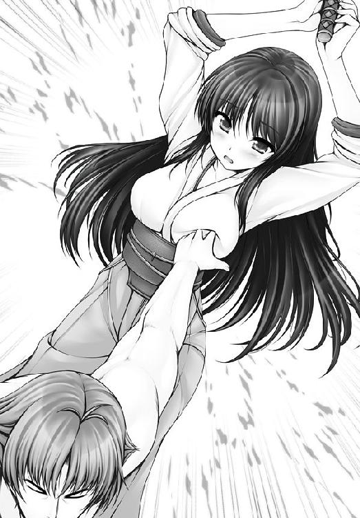
──かたや、取り残された斬香のほうであるが......。
「..................」
斬香は思い出していた。
一路に触られた時の感触を。
（感じる私が......本当の私......？）
心臓がドキドキしていた。
神経は高ぶるのに、どこかフワフワとした浮遊感もある。
不思議と楽しい気分なのだ。
武術家とは一種のアスリートである。ゆえに自分自身の反応には人一倍敏感だった。
だから、この感覚は無視してはいけないコトも分かっていた。
「........................」
斬香は膝をつくと、そっと胸元を押さえていた。
刻印のある胸元である。
「この印を触られたら......」
斬香は母の言葉を思い出していた。
「胸の傷を触られたら......」
あくる日の、朝である。
通学の時間だ。一路と久美恋たちは揃って学校に向かう途上のところだった。
「御統一路っ」
声がして、殺気もなく、長剣が襲いかかってきた。
少女である。斬香である。
一路は、久美恋をかばうように前に立った。
「またオレを殺しに来たのか？」
「違う」
静かに、斬香は首を横に振り。
「純潔を奪った責任を取ってもらいます」
「純潔を奪った!?」
久美恋が仰天した。
「オレは点穴をしただけだが？」
「おっぱい触ったら、充分、問題ですっ！」
久美恋が叱る。斬香はずいっと一路に歩み寄り。
「貴様が良人になれば、私の純潔は守られたことになる」
「ど、どどどどど、どんな掟よっ!?」
動揺し、思わず久美恋は叫んでしまった。
しかし斬香は大真面目である。真剣に真剣を重ねた顔つきで。
「それが母の教え。純潔を保つためのたしなみだ」
そう言うと、一路の喉もとへ、きらりと光る刃を突きつけた。
「言うことを聞かねば、殺す！」
「結局、殺すのか！」
「フフフ」
反省しているようでしていない斬香だった。
四 くすりと笑えぬ、クスリと薬師！
男子根絶委員会【だんし・こんぜつ・いいんかい】
この島から男と名の付くものをすべて一掃してしまうことを目的とした乙女的武力闘争集団。
入会した少女たちは、表三組（桜組、桃組、梅組）と呼ばれるクラスに配属され、先輩お姉さまの薫陶を受けながら、立派な男根会乙女として成長していくのである。
（それにしても危険な略称である）
（彼女たちは超ピュアなので、略称のアブなさに気づいていない）
委員会の主な決まり事は、表三組の筆頭以上のメンバーの合議によって決められている。
筆頭は推薦によって選ばれ、拒否は許されない。
もちろん、表があるからには裏もある。
狂科学者の星乃歪美は、裏三組に属している乙女の中でも有名な１人であろう。
その夜、アリカは眠れなかった。
「............」
一路のことばかり思い出してしまい、気持ちがたかぶってしまうのだ。
思い出を追い払っても追い払っても、また別の思い出が浮かんで、胸のうちがいっぱいになる。
眠ろうと思えば思うほど、余計に眼が冴える構図である。
（なんで１人でいるときまで、アイツのことを考えちゃうのよ!!）
このままベッドで横になっていても、もやもやするだけな気がして、アリカは部屋を出ることにした。
散歩でもしようかと、外に出る。
空を見上げた。涼しい。
ふと、斬香に告げた言葉を思い出していた。
『悪い奴が悪くない奴になって、仲良く出来るのが一番いいことでしょ。敵と友達になれたら、敵が消えたことにならない？』
何度おもいだしても、アリカは自分の言葉だとは思えなかった。
自分がこんな平和的なことを言い出す女の子になるなんて思わなかった。
それが、いい変化なのか、悪い変化なのか、アリカは自分でも分からなかった。
１つだけ言えるのは......。
（一路と出会わなければ、自分が変わることなんてなかった）
（なんか、悔しいな......）
一方的に振り回されている自分を、アリカは不甲斐なく思うのだ。
と、である。
歪美の研究所から、灯りが漏れていることにアリカは気づいた。
消灯時刻をとっくに過ぎているというのに、そんなルールなど知ったことかとばかりに建物はまだ息づいているのだ。
（まあ、驚くようなことでもないんだけれど......）
なにせ、相手は歪美である。
「ちょうどいいわ。話し相手が欲しかったし」
アリカは中に入っていった。
と、先客がいた。
独萬路悠子である。
「どうしたんですか？ こんな夜更けに」
フフッと独萬路は笑って。
「約束のものを受け取りに来たのですわ」
「約束のもの？」
「一路のヘンタイを治すクスリよ」
と、歪美は瓶を見せた。
中には微量の粉末が入っている。
「そんなクスリがあるの？」
アリカは驚いた。
「点穴術に関する文献を調べていたら、みつけてね」と歪美。
「昔の人も変態術には迷惑をしていたということですわ」と独萬路。
「それを飲ませると、点穴は止まるの？」
「止まるというより、点穴をする気が失せるといったほうが近いわね」
「そうなんだ......」
まじまじと、アリカは瓶の中の粉末を見つめた。
（これを飲ませることが出来れば、彼がマトモに......！）
「あとは誰が飲ませるかだけど」
「そこが困った問題なのですわ」
ふーむ、と独萬路が腕を組む。するとだ。
「私がやるわ！」
アリカが立候補した。
あくる日だ。
さっそくアリカは久美恋のもとを訪れていた。
近くの公園で、落ち合う。
「一路くんが点穴をしなくなるクスリ!?」
久美恋は驚いた。びっくりして、両手があり得ない方向に曲がるぐらい驚いた。
「そうよ。彼が点穴をする気をなくすクスリよ」
アリカは薬瓶を見せて。
「あなたに渡すのが一番いいと思って」
「でも、どうしてわたしに？」
「えっ......」
アリカは言葉に詰まった。
何と答えてよいか、分からなくなる。
「え、ええと、アイツに普通になって欲しいだけよ。普通になってもらえれば、みんなの誤解も減るでしょ？」
「普通......」
アリカの言葉に、久美恋は理解者を得た気持ちになった。
「そうですよね！ あんな馬鹿なこと、絶対にやめたほうがいいですよね！」
「その通りよ」
「もー、一路くんったら、誰彼かまわず、手当たり次第にヘンタイ行為をするんだもの......」
「手当たり次第じゃないわ、彼は」
とっさにアリカは反論を口にしていた。
「えっ」
久美恋が首を傾げたので、アリカはハッとなった。
（な、何を言っているの？ 私!?）
アリカは自分の耳を疑った。
否定せねば、否定せねばと思う。けれど、なのに。
（あいつは......、私のこと......、綺麗だからって、言ってくれたもの）
アリカは一路が自分にしでかした行為が、ただのきまぐれだとは思いたくなかった。
理由のあることだと思いたかった。
でも、そんなことは久美恋には言えない。
（ていうか、一路をフォローしてどうするのよっ！）
アリカは火を噴きそうなぐらいに真っ赤になった。
「ア、アリカさん......、大丈夫？」
心配になったのか、久美恋が声をかけてきた。
「え、あ、うん。大丈夫よ、大丈夫。あはははははっ！」
素直に答えるのも恥ずかしくて、アリカはそっぽを向いてしまった。
「............？」
久美恋は顔をきょとんとさせるばかりだった。
アリカと別れたあと、久美恋はしみじみと思った。
（意外だったな......、アリカさんが一路くんのこと、心配してくれるなんて......）
（変わったのかしら、アリカさんも一路くんと出会ったことで......）
（って、そんなコトあるわけないでしょ!!）
ぶるんぶるんと久美恋は首を振った。
（っていうか〝も〟って何よ、〝も〟って！ まるでわたしまで一路くんに影響されてるみたいじゃないのっ！）
断固として、断固として、それは否定したい久美恋だった。
（もーっ！ せっかくもらったこのクスリ、絶対に飲んで貰うんだもん！）
それについては、あまり悩む必要もなかった。
すぐにそのタイミングがやってきたからだ。
「一路くん、喉が渇いたでしょ──」
寮の屋上で、一路は静と修行をしていたのだ。
久美恋はお茶を持っていくことにした。
もちろんアリカに貰った薬をお茶にまぜて、である。
「おお、ありがとう」
一路は、一気にお茶を飲みほした。
「............」
久美恋は息を呑んで、一路の変化を見守った。
ところが、である。
「うむ、美味しい！」
一路はさっぱりとした笑顔を見せた。
何も変化がない。
久美恋は『失敗したかしら』と思った。
しかし、数秒後。
「ぐっ......！」
一路は突如として顔色を変え、崩れるように倒れ落ちたのだった。
一路は苦しんでいた。
額には玉のような汗を浮かべ、肩で息をしている。
「珍しい病気だね......」
マモリは神妙な顔で、一路の具合を診断していた。
姫百合マモリ。看護学校に通う女学生である。
「一路、これはどうだい？」
マモリは一路の指先を強く押してみた。
「ぐっ......！」
一路は苦悶の声をあげると、その場にうずくまってしまった。
悪い予感が当たった。マモリはそんな顔をして。
「困ったね......、どんな難病だか、想像も付かないよ」
「そんなっ」
みんなから声があがった。
マモリは悲しそうに首をふり。
「フツウにはない病気なのよ。正直、あたしにはお手上げ。こうなったら病院で精密検査を受けてもらって......」
そんなところへ、である。
「何事だ？ みんなして」
ひときわ大きな女性が姿を現した。
有菜である。
鳴神学園番長連合の総元締めにして、鳴神爆乳六歌仙の１人、今城有菜である。
倒した相手の技を手に入れることで増やした武芸はなんと１００。
歩く格闘技辞典ともいうべき、武術の達人であった。
有菜はひとしきりの説明を受けると、胸元で腕を組んだ。
「それはたぶん、末端敏感症だね」
「末端敏感症？」
「指先が何かに触れると激痛が走るんだよ」
そう言って、有菜は一路の指に自分の指を当ててみた。
「ぐっ......！」
一路は苦しみの声を漏らして、うめいた。
「聞いたことがあるよ。点穴術を破るために作られた秘術があるってね」
「秘術？」
「こんな病気、自然とかかるものじゃない」
「それなら納得がいくわ」
マモリがうなずいた。
「どういう意味ですか？」
可憐が聞いた。すると有菜とマモリは声をほぼ合わせて。
「誰かが一路をハメるためにやったのさ」
「──っ！」
久美恋は戦慄に立ち尽くした。
「............」
静は、久美恋の様子がおかしいことに気が付いた。
しかし、あえて何も言わない。
ただ、久美恋の様子を見守るだけだ。
「一路さまはどうなってしまうんですか!?」
心配げに顔を曇らせて可憐が聞く。
きっぱりと有菜が答えた。
「点穴が出来ないってことだね」
「な、なんと!!」
一路は打ちのめされたように凍りついた。
「そんな......」
静も言葉を失った。
「どうやったら、一路さまを治せるのですか!?」
可憐が聞いてきた。
有菜は残念そうに首をふり。
「アタシも話で聞いてるレベルに過ぎないからね。詳しいことは分からないんだ」
「点穴できなくなる病気なんて、ひどすぎますわ」
「大丈夫だ、これぐらいの痛み」
一路は自分の手を握りしめてみた。
「ぐっ......！」
それだけでも激痛が走り、一路は突っ伏してしまう。
「無理するんじゃないよ」
マモリは言い、すっくと立ち上がった。
「病院に戻って、いい治療方法を見つけてくる」
「アタシも仲間に聞いてくるぜ！」
有菜も立ち上がり、マモリと２人で急ぐように部屋を出て行った。
「..................」
久美恋は言葉もなかった。
（アリカさんは、一路くんがこうなることを知っていて......？）
もやもやと、胸のうちから苦しい気持ちが湧き上がってきた。
「......一路くん、大丈夫？」
「心配ない。案ずるな」
ははは、と一路は笑ってみせた。
だが、それは痛々しいぐらいにカラ元気にしか見えなかった。
一路にとって、点穴とは命そのもの、人生そのものである。
それを封じられたということは、生きることを禁じられたにも等しかった。
一路は人生の目標を失ったのだ。
虚しくないと言えば噓になる。悲しくないと言えば噓になる。
「............」
久美恋もショックだ。
こんな一路を見たかったわけではない。
「あ、あのね......、一路くん」
弱々しく、久美恋は口を開いた。
何を言うつもりだったのだろうか。
するとだ。横合いから、何かをひらめいたらしい可憐が口をはさんできた。
「リハビリですわっ」
「リハビリですと？」
そばに控えていた静が尋ね返した。
「硬いものが触れないのなら、柔らかいものからですわ」
「柔らかいものとは......？」
静は真剣な顔をして、可憐をうかがった。
すると可憐は自信満々に胸を張り。
「静さんのおっぱいですわ！」
と、可憐は一気に静の上着をはぎとったのだ。
どたぷ～～～～ん。
たっぷりとしたボリュームのあるバストが、一路の前にあらわになった。
「ひゃうん！」
いきなりの半裸に静は動揺し、両手で胸を隠した。
しかし可憐は言う。
「さあ、今こそ、静さんの乳房が一路さまの役に立つ時ですわっ！」
「し、師匠のため......！」
その言葉を聞いた途端、静の瞳に輝きが宿った。
「師匠！ こんな胸でよければ!!」
バッ、と静は両手を広げ、豊満なバストを全開にした。
「おおう」
「さすがですわ、静さんっ！」
深刻なんだか、深刻じゃないんだか、よく分からない３人だった。
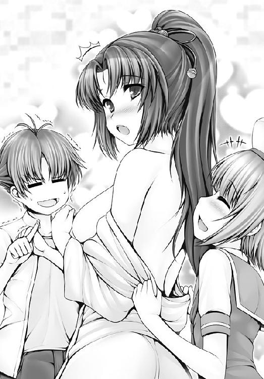
──で、昼下がりの公園である。
「珍しいな。久美恋ちゃんが用事なんて」
葛桐だった。一路の兄弟子である。
久美恋は、電話で葛桐に一路の病状を話していたのだ。
「それにしても、敏感症を治す方法か......」
「葛桐さんなら、何か知っていると思って」
「治す方法か。あるにはあったが......」
あるというわりに、葛桐はうかない顔をした。
まるで気乗りがしない。そんな気分を漂わせている。
けれど、久美恋はすがる気持ちで葛桐に訴えた。
「お願いしますっ！ 一路くんを助ける方法を教えて下さいっ！」
葛桐は即答せず、しばし考えた。
「これで解決すると言えば解決する」
懐から、巻物を取り出した。
なにやら古びた逸品である。蠟で厳重な封がしてある。
「神経を鈍くさせるツボの場所が書いてある。そこを突けば、一路の敏感すぎる指先の神経が弱くなって......」
「痛みも和らぐんですね！」
久美恋の表情に希望の笑みがさした。
うむ、と葛桐はうなずいて。
「ただし、一路は点穴術を捨てなくてはいけなくなる」
「えっ......！」
久美恋は葛桐の言葉に声を失った。
「仕方あるまい。点穴術の神髄は、針の穴に糸を通すような繊細さにある。指先の感覚が失われれば、技もまた使えなくなる。やむを得ないことだ」
「なんとかならないんですか!?」
葛桐は静かに首を横に振り。
「一路に巻物を渡しても、アイツは使わんだろう。だから久美恋ちゃんが決めるといい............」
「わたしが......」
久美恋は巻物を受け取った。
軽い巻物が、とても重かった。
夜である。
静はひとり、公園に来ていた。
手には一通の手紙を握りしめている。
『御統一路を元に戻したければ......』
そんな文言が、手紙には記されていた。
（おそらく、罠であろう）
そんなことは百も承知であった。
（だが、師匠を狙う敵をいぶりださぬことには、話が始まらぬ！）
静は暗闇に向かって叫んだ。
「出てこい！ 私は逃げも隠れもせぬ！」
次の瞬間、闇が動いた。
「お前たちは......！」
漆黒から現れた者たちの正体を見て、静は戦慄した。
──同じ頃、である。
一路は橋の下にいた。
ひとり、静かに修練を続けていた。
指は使わない。身のこなしを中心としたフットワークである。
久美恋は、あとを付けてきていた。
気配に気付き、一路は振り向いた。
「久美恋、どの......？」
空にはまるまると満ちた月が浮かんでいた。
ほのかな月明かりが、２人を照らし出す。
「一路くん......」
久美恋は胸をいっぱいにしていた。
今にも泣きそうなぐらいに瞳をわななかせている。
つらいのだ。苦しいのだ。一路のことが心配で、自分がしてしまったことが申し訳なくて、どうしようもないぐらいに悲しいのだ。
久美恋は本当のことを話そうと思っていたのだ。
「あのね、実はね......」
口を開こうとした、その時である。
「御統一路！ 覚悟ッ!!」
どこからか声がした。
ぴちゃり、ぴちゃりと天井から水の落ちる音がする。
薄暗い部屋である。
ここは、反省室......という名の男根会の拷問室だった。
壁に貼り付けられて、身動きすら出来ずにいる少女がいる。
静だ。古舞静だ。
両手両足を鎖で拘束され、脱獄不可能な状態に追い込まれている。
「久しぶりですわね、静さん」
「なっ............！」
聞き覚えのある声に、静は顔色を変えた。
とぼしい灯りの中、はっきりとした輪郭は見えないが、それでも静には分かった。
かつての同胞、独萬路悠子である。
「堂々と勝負しろ！ 私と!!」
静は怒りを露わにした。
凜としたまなざしも鋭く、静は独萬路を睨み付ける。
だが独萬路はひるまない。
「とても素敵なお顔ですわ」
独萬路はサディスティックな笑みを浮かべた。
「裏切り者にはお仕置きが必要ですわね」
彼女の足下で、ピシャンと音がした。
鞭である。トゲの付いた鞭である。
「くくっ」
独萬路は静に向かって鞭をふるった。
「きゃあっ」
静の服が千切れ飛んだ。
清純な肌が露わとなり、純白の肌に赤々とした鞭のあとが刻まれる。
「楽しい時間になりそうですわ」
ふふふ。独萬路の唇は不気味に歪んだ。
──おなじ頃、男子根絶委員会の学生寮では......。
部屋でひとり、アリカがふさいでいた。
「私が渡したクスリで、こんなことになるなんて......」
クスリの本当の効能を聞いてからというもの、アリカは落ち込んでいた。
もやもやとした気持ちが垂れ込めて、とても悲しい気持ちになる。
そんな時である。コンコンと扉がノックされた。
誰だろう？
けれど今は誰とも話をする気分になれない。アリカはベッドの上で膝を組んだ。
カチャリと扉が開いた。
「鍵、閉め忘れているわよ」
歪美だった。
本当に扉が開いていたのか、歪美が特殊な道具を使ったかは分からない。
「うかない顔をしてるわね、アリカ」
「な、なんでもないわよ」
ぷい、とアリカは横を向いた。
「あなたに必要なのは、コレじゃないかしら」
と、歪美はポケットから、錠剤を取り出した。
アリカはつられるカタチでそれを見た。
「これは......？」
「解毒薬よ」
歪美はフフッと笑った。
信じられない顔をして、アリカは尋ねた。
「クスリを作ったアナタが、どうして」
「私は人が求めるものを作るだけだから」
いっぽう......。
一路と久美恋は、真っ暗闇の部屋に閉じ込められていた。
男根会の牢獄である。静が閉じ込められている拷問室とは、また別の建物であった。
２人は互いに相手の無事を確かめ合った。
「久美恋どの、大丈夫か？」
「わたしは平気だよ。それより一路くんのほうこそ、痛みはどう？」
「案ずるな」
口ではそう言うが、一路の声は重かった。
その苦しげな声音だけで、必死で痛みをこらえているのが分かる。
「ごめんなさい」
久美恋は言った。
「何を謝るのだ、久美恋どの。謝らなければならぬのは、巻き込んでしまったオレのほうだ」
「違うの、そうじゃないの、一路くん」
ふるふると久美恋は首を振った。
「わたしが......、わたしのせいで......」
「こんなところで痴話げんかですか？」
あざ笑うような声がした。
鉄格子の向こう。薄暗がりの中から１人の少女が現れる。
独萬路悠子であった。
「おぬしは......？」
一路の問いに、彼女は笑みを浮かべた。
「これ、なんだか分かります？」
そう言って、独萬路はひらりと何かを落とした。
「な......、これは！」
静の、古舞静の服の切れ端だった。
生地が血で滲んでいた。
「何をした！ おぬし！」
「お仕置きですわ。裏切り者への」
くすくすと、独萬路は微笑する。愉しげに。嬉しそうに。
「そして、アナタを破滅させるクスリを作らせたのも、私」
鉄格子の外に立って、彼女は一路たちを見下ろし、そして見下した。
「あなたが......！」
久美恋の声には驚きと、それ以上の感情がこもった。
それ以上の感情とは怒りだ。
「何のために、一路くんを!!」
「決まっているでしょう？ その男を倒すためですわ」
フフッと独萬路は笑い、言葉を続けた。
「ただ抹殺するだけでは面白くありませんでしょう？ 力を奪い、夢を奪って、アナタを絶望の淵へ突き落として、驚愕にうちひしがれた顔を見させてもらってから、死んでもらいたいのですわ！」
「......っ！」
「いい顔です、そういう顔が見たかったのです！」
あははははははははは。
ひとしきりの哄笑を残して、独萬路は去っていった。
久美恋は本気で後悔した。
「ごめんなさい」
久美恋は、自分がクスリをまぜたことを、一路へ正直に話した。
「よく考えないで、こんなことになってしまって......」
「久美恋どのの......せいでは......ない」
疲労が蓄積されているのだろう。一路の息は荒い。
ますます久美恋は胸を痛めた。
「わたしが馬鹿だったの。わたし、何があっても一路くんを助ける！」
ごとり、と音がした。
久美恋のもとから、巻物が落ちたのだ。
「これは......？」
一路が尋ねる。
隠し立てしても意味がない。そう思い、久美恋は真相を話すことにした。
「葛桐さんが、末端敏感症を治すツボが書いてあるって、この巻物を......！」
「なんと......！」
「でも、神経が鈍くなったら点穴術も使えなくなるって。だから、どうしようか......」
「点穴術が............!!」
一路は戦慄した。
だが、迷ったのは一瞬だけだ。
「久美恋どの！ そのツボを押してくれ！」
「いいの!? そのツボを押したら、一路くん、点穴できなくなっちゃうんだよ!!」
久美恋は反論をした。
「一瞬でも助かれば、脱出できる、それでいい」
「ダメだよっ」
久美恋は怒った。
「一路くん、点穴を極めるのが夢だったんでしょう!?」
「それでもだ！」
（わたしを助けるために......）
久美恋はそう思った。そして自分の無力を呪った。
自分は足を引っ張ってばかりだというのに、どうしてそこまでして自分を助けてくれようとするのか。
（わたしが一路くんに出来ることは......）
久美恋は考えた。
考えて、考えて、考え抜いた末に、久美恋は１つの結論に達した。
（たとえそれが胸タッチであっても......）
（一路くんのリハビリに一生付き合う！）
それぐらいのつもりで、久美恋は巻物の封を解いた。
「っ!?」
開いた巻物には敏感症を治すためのツボがはっきりと記されていた。
その場所とは......。
肛門（のすぐそばの場所）だった。
「なによそれ～～～～～～～～～～～～～～～～～～～～～～～～～～～～～!!」
「突いてくれ、久美恋どの！」
イヤとは言わせぬ勢いで一路は迫った。
「じょ、冗談よね？」
「冗談でこんなことを頼めるものか」
一路は真剣だった。真剣以外の時がない、それが一路である。
「いや、突いてくれ！」
「冗談って言って～っ!!」
久美恋は叫ぶしかなかった。
そのときだ。
巨大な爆発音がした。
「うおおおおおおおおおおおおおおおおおおおおおおおおおおおおおおおおおッ！」
有菜に率いられて、学生寮の門を突き破ったのは番長たちだった。
「鳴神学園番長連合！ 一路を救うためにただいま推参!!」
「どうして貴方たちが!?」
独萬路が問うた。
男子根絶委員会と番長連合。
番長たちは『お高く止まった連中』と相手を馬鹿にし。
委員会は『下品で粗野な者たち』と相手を見下す。
スタイルが真逆な彼女たちは、まったくといっていいほど、話も相性も合わないのだった。
「仲間の危機は助ける！ それが番長界のルール！」
「仲間？ 馬鹿じゃありませんこと？」
フッ、と独萬路は笑みを見せ。
「返り討ちにしてあげますわ！」
男根会と番長たちが激突した。
「久美恋どの、治すツボとはどこなのだ！」
一路はなおも激しく詰め寄った。
久美恋は言えない。言えるわけがない。
肛門だなんて。
口にするのも恥ずかしく、久美恋は顔を赤くするしかなかった。
「久美恋どの、頼むから、そのツボを押してくれ！」
「いやーっ！」
「頼むっ！」
と、そこへである。
廊下の向こうから、１人の少女が駆け込んできた。
「２人とも、大丈夫っ!?」
アリカであった。よほど急いでいたのか、息は荒い。
そして、とても心配げな表情をしている。
だが、久美恋はアリカに警戒した。
一路の件もある。心を許す気持ちにはなれなかったのだ。
「ごめんなさい」
アリカはそう言って、手にしていた鍵で鉄格子を開けにかかった。
そして中に入るや、一路たちの縛めをほどいた。
「どうして......？」
びっくりとした表情で、久美恋は聞いた。アリカの真意がどこにあるのか分からなかったからである。
「早く逃げて」
と、アリカは短く答えるだけだ。
廊下のいっぽうをアリカは指さして。
「出口はあっち。早く行って」
「かたじけない」
と、一路は立ち上がった。
しかし、これまでの疲労が深いのか、一路はガクリと膝をついた。
すぐに久美恋が一路に肩を貸した。
「一路くん、行くわよ」
「ちょっと待って」
アリカは久美恋を呼び止めた。
「これ、飲ませてあげて」
と、アリカは久美恋にあるものを手渡した。
それは錠剤──解毒薬であった。
外へと続く廊下は、長く長く続いていた。
久美恋は一路に肩を貸して歩いていた。
２人の足取りは重かった。
末端敏感症の痛みは、ただ歩くだけで一路に深いダメージを与えていたのだ。
苦痛を悟られまいと、一路はうめきひとつあげずに頑張っていたのだが、そのうちに歩くのもつらくなり、自分の身体を支えることも難しくなった。
いったん、久美恋は一路を休ませることにした。
「す、すまぬ......」
一路は壁にもたれかかり、ぐったりと動けない状態になる。
久美恋はアリカからもらった薬を握りしめた。
一路はすうすうと息をしている。
眠っているのか、気絶しているのか、分からないほど憔悴していた。
声をかけるのもためらわれるような疲労である。
アリカからもらった錠剤を飲ませるには、口移ししかなかった。
「............！」
恥ずかしがっている場合じゃない。久美恋はそう思った。
すぐに久美恋は錠剤を口に含んだ。
そして、一路に口移しをする。
舌で唇から唇へ錠剤を送り込む。
ごくりと、一路は薬を飲み込んだ。
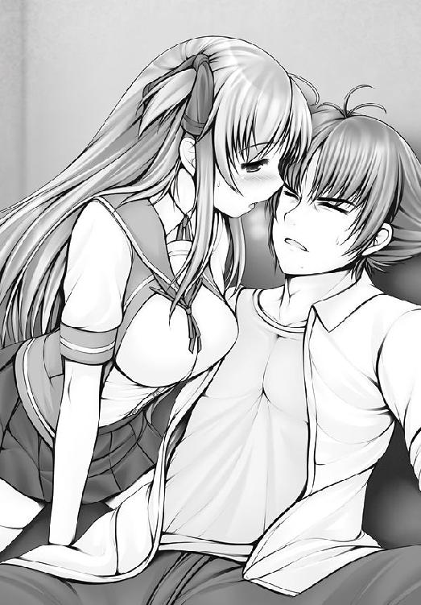
──いっぽう、有菜率いる番長連合と独萬路率いる委員会との闘いは、独萬路の優位に展開していた。
地の利である。
独萬路たちは、わざと撤退するフリをして、背後に別働隊を回り込ませて挟み撃ち。
有菜たちを、隘路に押し込めて、各個撃破。
「貴様さえ倒せば！」
有菜が叫んだ。独萬路を見つけた有菜は、自ら先頭に立ち、突撃をかけた。
しかし、それは罠だった。
有菜の足もとが突如として陥没する。
「落とし穴!?」
気付いた時は、有菜は奈落の底に落ちていた。
「独萬路、おのれっ！」
「いい気味でございますわ！」
あざけ笑う声が、落とし穴の縁から聞こえた。
「オンナの風上にもおけぬ連中、すみやかに成敗してくれますわ！」
独萬路であった。彼女の哄笑が高らかに響きわたる。
「くっ......！」
悔しいが、有菜は自分の敗北を認めざるを得なかった。
「ちょうどいいですわ。埋めてさしあげます」
独萬路が命じる。大量の土砂が有菜たちの頭上に降りかかってきた。
「再生不可能なゴミは埋めてしまわないといけませんですから！」
「待てっ！」
その時だ、一路が現れたのは。
「独萬路！ おぬしの相手はオレだ！」
一路は完全なる復活を果たしていた。
声には張り、お肌ツヤツヤ、元気満タン１００％である。
「どうして、ここに!?」
信じられない、といった顔をして独萬路は驚愕した。
「有菜どの、遅れて済まぬ」
「ふん、術を使えぬ貴様など。倒せ！ アイツを倒せ！」
独萬路は叫んだ。
部下の少女たちが、一路めがけて殺到する。
いずれも腕に覚えのある手練れ揃いだ。
しかし、そんじょそこらの達人など、調子を取り戻した一路の敵ではなかった。
「渦勁真空刃ッ！」
「きゃーっ！」
たちまち繊維質が舞い散り乱れる。つまり衣服であったり、下着であったり......。
一糸まとわぬ姿になった女の子たちは両手で大事なところを隠すしかなく、次々と降参状態に陥っていった。
つまり戦闘回避であり、平和実現である。
一路は一気に独萬路の目前へと迫った。
「ひゃっ」
独萬路もまた、一路の真空刃によって、生まれたままの姿を露わにしていた。
「心の歪みは身体の歪み、おぬしの歪み、点穴で治す！」
一路は言い切った。
「し、仕返しをしようって言うの!?」
独萬路は恐怖に顔を青ざめさせた。
そんな彼女に向かって、一路は横に首を振った。
「オレはお前を気持ちよくする」
「えっ？」
独萬路は両手で胸を隠した。
「さ、触るのですか!?」
「違う」
「触るよりもひどいことって......！」
いろいろ想像して、独萬路は真っ青になっていた顔を真っ白にさせた。
「獅子髪大活性！」
一路は独萬路の頰をついた。
次の瞬間だ。
独萬路の可憐な顔に、みるみるとヒゲが生えてきたではないか。
「な、ななな、なにコレ～～～～っ！」
「オレからの祝福だ」
一路はつぶやき。
「点穴によって、男性ホルモンを活性化させた」
「いーやああああああああああああああああああああああああああああああああ！」
独萬路は崩れ落ちた。
相手が戦闘不能になり、敵が敵でなくなること。活人流的には大勝利である。
「平和実現！ めでたしめでたしだ！」
「これでいいのかしら......」
よろこんでいいのか悪いのか、複雑な心境になる久美恋なのだった。
終
実によく晴れた空だった。
絵の具をぶちまけたような青一色の空に、鮮やかなまでに白い入道雲が沸き立っている。
柔らかな風には潮の匂い──そんな港に、１人の男が降り立っていた。
年の頃合いは20歳を過ぎたあたりだろうか。使い古されたバッグは、彼が旅慣れていることを物語っている。
「来るたびに別の島みたいになってるな、この島は」
「生徒の入れ替わりが激しいからな」
見事な黒髪をした少女である。日々樹ワタルであった。
彼女こそ、この島の支配者──鳴神学園の生徒会長である。
男は肩をすくめて苦笑いをこぼす。
「アンタはずっと生徒会長のままだがな」
「仕方有るまい。私より強い者がおらぬのだ」
「俺のほうが追い抜いちまったじゃないか、背も、年も」
そう言って、男は会長の頭をぽんぽんと撫でた。
「やめろというに」
言葉とは裏腹に、会長は笑っている。
「爺さんに会いに行くのだろう？」
「会いに行くだけで済めばいいがな」
「私が付き添ってやろうか？」
「どっちの味方をするつもりだい？」
意味深な目をして、男は会長を見た。
「たいした自信だな」と、会長は笑い「爺さんと同格になったつもりか？」
「久美恋を守りに来た」
男は言った。口調は静かだったが、決断と覚悟に満ちた声だった。
「爺さんやアンタと違って、俺は本気だからな。文句は言わせねえ。この島を、いや、この星ぜんぶをひっくり返したって、久美恋を守ってみせる」
フッ、と会長は笑った。
「ヘンタイ抜きの一路か」
「どういう意味だ？」
「褒めたのだよ、不死原切人。見せてもらおうか、貴様の実力を」
あとがき
沖縄は素晴らしいです。
特に海が。
『ふるこんたくと！』を書くために沖縄に行く機会が増えたのですが、行くたびに本島や離島の海に向かいます。
大人になってから、海の楽しさにハマって、世界のいろんな海を見てきたのですが、沖縄の海はベスト３に入れてもいいぐらいに綺麗です。
砂のこまかさ、澄んだ海の色、熱帯魚の数や種類、どれも素敵で、これまで地球を何分の一周もしてエメラルドブルーを見に行っていたのはナンなんだ、と思うぐらい。
そんだけ海にハマってるわりに、本編で海が出てくるシーンは少ないのですが......。
まあ、登場人物の素肌率は水着並みに高いので、ＯＫですね！（なにが？）
素肌率が高いといっても、文字の世界の出来事なので、いっそのこと、最初っから最後まで全裸でもいいような気もしてます。
............ホントにいいのか............？
逆に挿絵のシーンだけ着衣にしていれば、パッと見、フツーの小説と見分けがつかないでしょう。ＰＴＡ対策もこれでＯＫ！
............いや、それはそれでツマンナイような............。
そうそう、ライトノベルを書き始めて10年目を迎えました！
長いようで短い10年でしたね。
記念に全作品を集合させて、ディケイドさせようかと思ったりもしましたが、自作はそもそもどの作品もハチャメチャということでは同じなので、特に融合させる必要もないのでした。
それはつまり作風が変わっていないということなのですが、成長がないということかもしれません。10年間の無成長............。まるで今の日本経済ですね！
安心、安心。
むしろ不安なのでは？
気にしない。気にしな～い。
そろそろ人生も折り返し地点です。
最近のトピックスというと、パソコンのディスプレイがまた増えました。
本を書き下ろすたびに１台ずつ増やしていっているのですが、やっと６台になりました！
いや、ホントに壁を埋めてるだけなのですが......、別に世界中の情報をリアルタイムに集める必要なんて、一介の小説家にはないので......。
壁を埋め尽くすディスプレイって、ＳＦ映画みたいでウキウキしてくるんですよね。
ハイテンションになるためのインテリアとして購入しているような感じです。
ちなみに全部稼働させると、あまりの暑さに部屋で仕事する気が失せます。
みんなも馬鹿な買い物はほどほどにね！
最近、世間での休日を執筆の休みの日にしてみてます。
娘が大きくなって「どっか連れてって～」とか言い出した時に「仕事があるからダメだよ」とは言いたくないので、１週間分の仕事を平日のうちに片付けるという、世間一般の人からすると当たり前のような勤勉さに、今さら目覚めたわけです！
んで、これまで７日かけてた仕事量を、５日でするようにしてみたわけですが............。
次の休みって、あっという間に来ちゃうね！
月曜日が始まったと思ったら、もう金曜日！ もう土日！
さらに日本は祝日が多い！ 多すぎる！
休みが多すぎて、死ぬ！ 平日に殺される!!
そんな感じの毎日です。
紙幅も尽きてまいりましたので、近況報告もこのへんで。
また次巻でお会いしましょう！
あすか正太
ふるこんたくと！
３ 想いを閉ざすアツい壁
あすか正太
角川スニーカー文庫
平成22年5月1日 発行
発行者 井上伸一郎
発行所 株式会社角川書店
〒102-8078 東京都千代田区富士見2-13-3
http://www.kadokawa.co.jp/
(C) Shouta ASUKA 2010